💎 Lesson 14: Advanced Materials and Shading
Welcome to the world of advanced materials and shading! This is where the magic happens—where you transform simple 3D geometry into convincing glass, realistic metal, organic wood, translucent skin, and countless other materials. You'll learn the powerful node-based shader system that gives you unlimited creative control over how your models look. By mastering materials and shading, you'll be able to create photorealistic renders or stylized masterpieces with equal skill.
🎯 What You'll Learn
- Understanding the Shader Editor and node-based workflow
- Mastering the Principled BSDF shader and its inputs
- PBR (Physically Based Rendering) workflow fundamentals
- Creating procedural textures without image files
- Mixing shaders and textures for complex materials
- Working with normal maps and displacement
- Creating realistic glass, metal, wood, and plastic materials
- Understanding subsurface scattering for organic materials
- Emission and glowing effects
- Material optimization and best practices
- Complete hands-on projects for various material types
⏱️ Estimated Time: 60-75 minutes
🎯 Projects: Create 5+ realistic materials from scratch
📑 In This Lesson
🎨 Understanding Materials and Shading
Materials define how surfaces interact with light. They're the difference between a dull gray sphere and a shiny chrome ball, between a plastic toy and a precious gemstone. Let's understand what materials are and how they work in Blender.
What Are Materials?
💎 Material Fundamentals
In the real world:
- Materials are the physical substances objects are made from
- Wood, metal, glass, plastic, fabric—each has unique properties
- These properties determine how they look when lit
- Reflectivity, transparency, roughness, color—all material properties
In Blender:
- Materials are mathematical descriptions of surface properties
- They tell the renderer how light behaves when it hits the surface
- Defined using shader nodes in a node-based system
- Can simulate any real-world or imaginary material
What materials control:
- Color: Base appearance of the surface
- Reflectivity: How much light bounces off
- Roughness: Shiny (smooth) vs. matte (rough)
- Transparency: See-through or opaque
- Metallicness: Metallic vs. non-metallic behavior
- Emission: Self-illumination/glowing
- Subsurface: Light penetrating surface (skin, wax, marble)
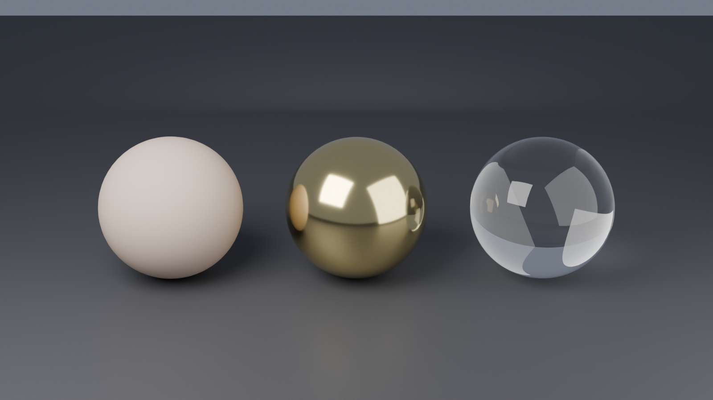
💡 The Light Interaction Analogy: Think of materials as instructions for how light should behave when it hits a surface. Imagine light as water hitting different surfaces—metal reflects it like a mirror, cloth absorbs most of it, glass lets it pass through while bending it. Materials are the rules that describe these behaviors mathematically.
Shaders vs. Materials vs. Textures
These terms are often confused. Let's clarify the relationship:
🔍 Terminology Clarification
Shader:
- A program/algorithm that calculates how light interacts with a surface
- The "brain" that does the math
- Examples: Principled BSDF, Diffuse BSDF, Glass BSDF
- In Blender, shaders are represented as nodes
Material:
- The complete definition of a surface's appearance
- Combination of shaders, textures, and settings
- What you assign to objects
- Can contain multiple shaders and textures working together
Texture:
- Data that adds detail or variation
- Can be images (photos, painted textures) or procedural (math-generated)
- Plugged into material parameters to add complexity
- Examples: color maps, bump maps, roughness maps
The relationship:
- Textures provide input data
- Shaders process that data and define behavior
- Materials combine everything into the final result
Render Engines and Materials
🎬 Render Engine Considerations
Blender's render engines:
- Eevee: Real-time rasterization engine
- Fast, interactive preview
- Good for games, animations, quick iterations
- Some limitations on realism
- Approximates light behavior
- Cycles: Ray-tracing render engine
- Physically accurate lighting
- Photorealistic results
- Slower but more realistic
- Simulates actual light physics
- Workbench: Simple viewport display
- Minimal lighting, fast display
- For modeling, not final renders
Material compatibility:
- Principled BSDF works in both Eevee and Cycles
- Some shader nodes are Cycles-only
- This lesson focuses on Principled BSDF (universal)
- We'll note when features are engine-specific
PBR: The Modern Standard
🌟 Physically Based Rendering (PBR)
What is PBR?
- Modern approach to materials based on real-world physics
- Uses physically accurate parameters
- Materials look correct under any lighting
- Industry standard for games, films, visualization
PBR principles:
- Energy conservation: Surface can't reflect more light than it receives
- Metallicness workflow: Clear distinction between metals and non-metals
- Roughness control: Microsurface smoothness determines reflections
- Measured values: Based on real-world material properties
Why PBR matters:
- Predictable, consistent results
- Works in different lighting conditions
- Easier to create realistic materials
- Portable between software and engines
In Blender:
- Principled BSDF shader is Blender's PBR solution
- All-in-one shader following PBR principles
- We'll master this shader in this lesson!
The Material Creation Workflow
🎯 Standard Material Workflow
Typical process for creating materials:
- Create/Select object: You need something to apply material to
- Add material: Create new material slot
- Open Shader Editor: Access node-based material system
- Configure Principled BSDF: Adjust parameters for desired look
- Add textures (if needed): Plug in color maps, roughness, etc.
- Test with lighting: See how material responds to light
- Refine and iterate: Adjust until you achieve the desired result
- Save/reuse: Materials can be saved and applied to other objects
Why Learn Advanced Materials?
🚀 The Power of Material Mastery
What advanced material knowledge enables:
- Photorealism: Create materials indistinguishable from photographs
- Artistic control: Achieve any visual style you imagine
- Efficiency: Procedural materials = no texture files needed
- Flexibility: Easy adjustments without repainting textures
- Professional quality: Industry-standard workflows and results
- Universal skills: Principles transfer to other 3D software
Career applications:
- Game development (prop and environment materials)
- Product visualization (realistic material representation)
- Architectural rendering (accurate material simulation)
- VFX and film (matching real-world materials)
- Motion graphics (stylized and abstract materials)
🖥️ The Shader Editor Workspace
The Shader Editor is your command center for creating materials. It's a node-based visual programming interface where you connect nodes to build complex material behaviors. Let's master this essential workspace!
Opening the Shader Editor
🎨 Accessing the Shader Editor
Method 1: Use the Shading workspace (recommended)
- Click "Shading" tab at top of Blender window
- Workspace pre-configured for material work
- Shows: 3D Viewport, Shader Editor, Image Editor, Properties
- Everything you need in one layout
Method 2: Change editor type
- Click editor type icon (top-left corner of any editor)
- Select "Shader Editor" from menu
- Converts current editor to Shader Editor
Recommended setup:
- Use Shading workspace as starting point
- Adjust viewport shading to Material Preview or Rendered
- See material changes update in real-time
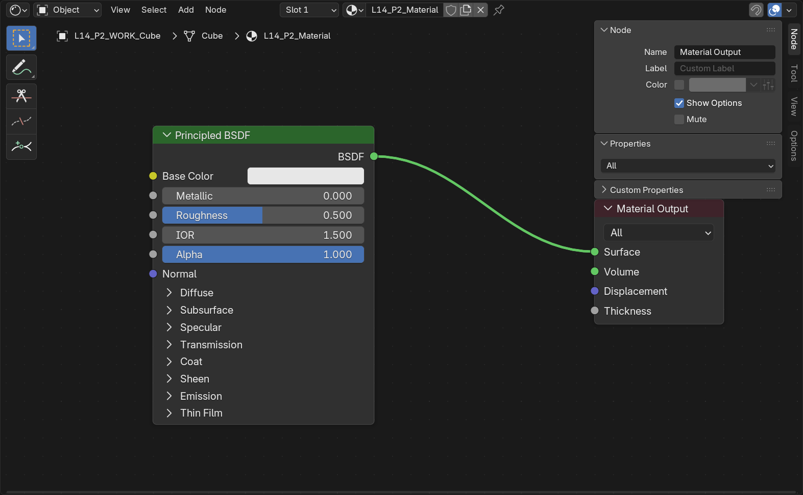
Shader Editor Interface Overview
🗺️ Editor Components
Main areas:
- Node workspace: Large grid area where nodes are placed
- Pan:
Middle Mousedrag - Zoom: Scroll wheel
- Frame all:
Homekey
- Pan:
- Header (top): Tools and options
- Shader type dropdown (Object, World, Line Style)
- Add menu (for adding nodes)
- View options
- Snap settings
- Toolbar (left, press T): Selection and annotation tools
- Sidebar (right, press N): Node properties and item info
Default material setup:
- When you create a new material, you'll see two nodes:
- Principled BSDF: The main shader (left)
- Material Output: Final connection point (right)
- Green line connects them (shader socket connection)
- This is your starting point for every material!
Understanding Nodes
🔲 Node Basics
What is a node?
- A box that performs a specific function
- Has inputs (left side) and outputs (right side)
- Connect nodes to create complex behavior
- Visual programming—no coding required!
Node anatomy:
- Node header: Shows node name and type
- Input sockets (left): Where data comes in
- Circles for different data types
- Green = Shader
- Yellow = Color
- Gray = Value/Number
- Blue = Vector
- Output sockets (right): Where data goes out
- Parameters: Settings and values within the node
Working with nodes:
- Add node:
Shift+Aor Add menu - Delete node: Select and press
X - Move node: Click and drag (or
Gkey) - Duplicate node:
Shift+D - Connect nodes: Click output socket, drag to input socket
- Disconnect: Drag connection away from socket
Node Connections and Data Flow
🔗 Connecting Nodes
How connections work:
- Data flows from left (outputs) to right (inputs)
- Think of it like a pipeline—information flows through
- Color of connection shows data type
- Can connect multiple nodes in sequence
Socket color meanings:
- Green: Shader data (material properties)
- Yellow: Color/RGB data
- Gray: Single value/number (roughness, metallic, etc.)
- Blue: Vector data (coordinates, normals, directions)
Connection tips:
- Can only connect compatible socket types (mostly)
- Yellow (color) can plug into gray (value) and vice versa
- Blender auto-converts when possible
- One output can connect to multiple inputs
- One input can only have one connection (new replaces old)
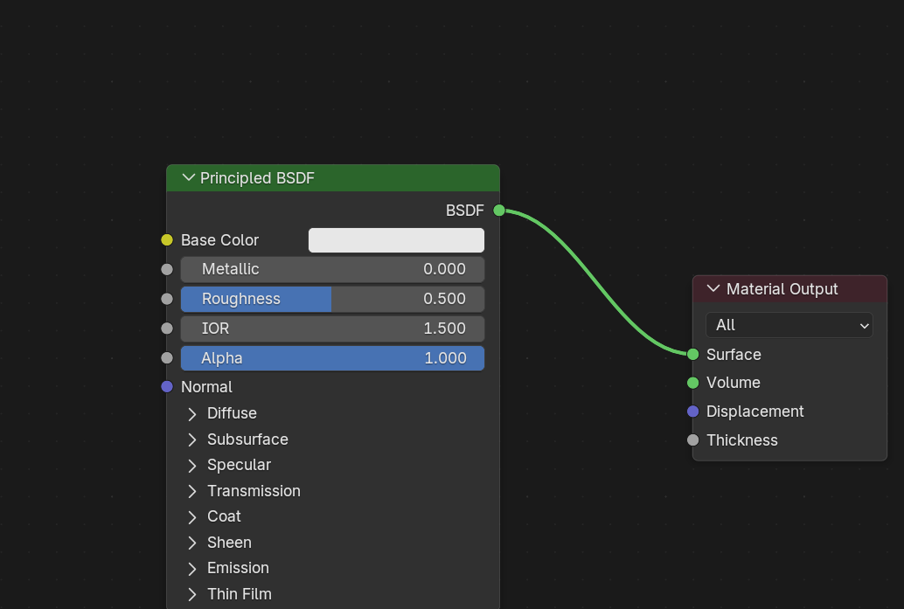
Adding Nodes
➕ Node Adding Methods
Add menu (Shift+A):
- Shows organized categories of all available nodes
- Navigate through menus to find what you need
- Most comprehensive method
Search Add menu:
- After
Shift+A, start typing node name - Filters list to matching nodes
- Fastest when you know what you want
- Example: Type "color ramp" to quickly find ColorRamp node
Node categories (in Add menu):
- Input: Textures, coordinates, attributes
- Output: Material Output, AOV Output
- Shader: Principled BSDF, Diffuse, Glass, etc.
- Texture: Procedural textures (Noise, Voronoi, etc.)
- Color: Color manipulation (RGB Curves, ColorRamp, Mix)
- Vector: Coordinate transformation and manipulation
- Converter: Data type conversion and math operations
Organizing Your Node Tree
🎨 Keeping Nodes Organized
Why organization matters:
- Complex materials can have dozens of nodes
- Messy layouts are hard to understand and edit
- Clean organization = easier troubleshooting
- Professional habit to develop early
Organization techniques:
- Left-to-right flow: Inputs on left, output on right
- Align nodes: Keep nodes in neat rows
- Select multiple nodes:
Shift+Click - Move together:
Gkey
- Select multiple nodes:
- Use frames: Group related nodes
- Select nodes, press
Ctrl+J - Creates frame around selection
- Label frames for organization
- Select nodes, press
- Reroute nodes: Clean up messy connections
- Add → Layout → Reroute
- Acts like a wire junction
- Helps avoid crossing cables
- Collapse unused nodes: Click arrow on node header
💡 The Assembly Line Analogy: Think of your node tree like a factory assembly line. Raw materials (textures, coordinates) enter on the left, go through processing stations (shader nodes), and emerge as the finished product (material) on the right. Keep your assembly line organized, and it's easy to see how everything works!
💎 Mastering Principled BSDF
The Principled BSDF shader is the heart of modern material creation in Blender. It's an all-in-one shader that can create virtually any material type—from plastic to metal, glass to skin. Let's master every parameter and learn how to use them effectively.
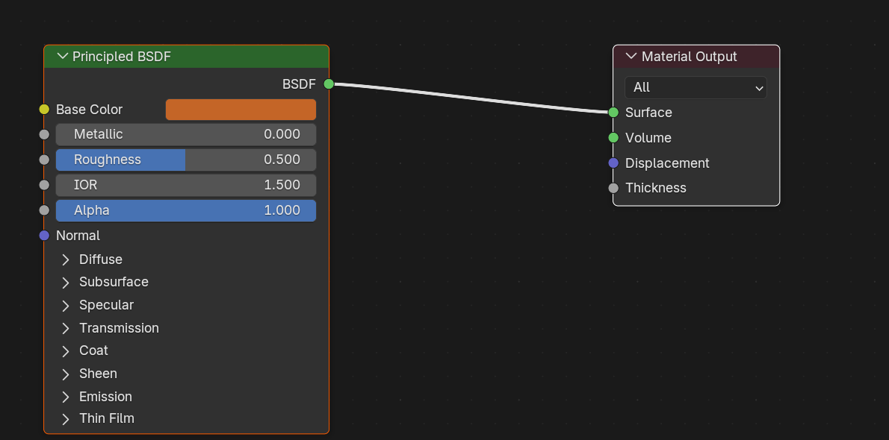
What is Principled BSDF?
🌟 The Universal Shader
Principled BSDF overview:
- BSDF: Bidirectional Scattering Distribution Function (how light scatters)
- Principled: Based on physically accurate principles
- All-in-one shader combining multiple material types
- Industry-standard PBR shader
- Can create 90% of materials you'll ever need
Why it's powerful:
- One shader instead of many specialized shaders
- Consistent, predictable behavior
- Works in both Eevee and Cycles
- Energy-conserving (physically accurate)
- Easy to learn, hard to master (lots of depth!)
Core Parameters: Base Color
🎨 Base Color Input
What it does:
- The fundamental color of the surface
- Also called "Albedo" or "Diffuse Color"
- The color you see when light hits the surface
- Can be solid color or texture
How to use it:
- Click color swatch to open color picker
- Or plug in Image Texture node for painted/photo textures
- Or plug in Procedural Texture for generated patterns
Best practices:
- For metals: Use desaturated colors or grayscale
- Gold: Yellowish gray, not bright yellow
- Copper: Orange-tinted gray, not pure orange
- Steel: Medium gray values
- For non-metals: More color variety allowed
- But still avoid over-saturation
- Real materials are rarely 100% saturated
- Avoid pure black (0,0,0) or pure white (1,1,1)
Metallic Parameter
🏆 Metallic Input
What it does:
- Defines whether surface behaves as metal or non-metal
- Binary choice in most cases (0.0 = non-metal, 1.0 = metal)
- Fundamentally changes how light interacts with surface
- Metals have colored reflections; non-metals don't
Values and effects:
- 0.0 (Non-metallic):
- Plastic, wood, stone, fabric, skin
- Colorless/white reflections
- Base color shows through
- 1.0 (Metallic):
- Gold, silver, copper, iron, chrome
- Colored reflections matching base color
- No diffuse component (all reflection)
- In-between values (0.1-0.9):
- Rarely used in PBR workflow
- Can create artistic/stylized effects
- Or represent oxidized/dirty metals
Quick guide:
- If real material conducts electricity → Metallic = 1.0
- Everything else → Metallic = 0.0
- When in doubt, set to 0.0 (most materials aren't metal)
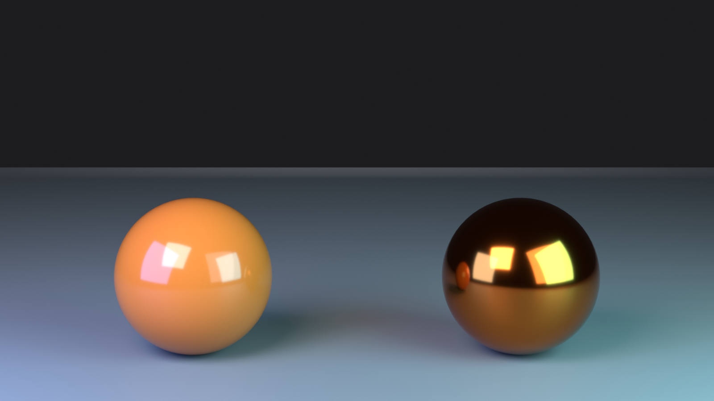
Roughness Parameter
✨ Roughness Input
What it does:
- Controls microsurface smoothness
- Determines how sharp or blurry reflections are
- 0.0 = perfectly smooth/mirror-like
- 1.0 = completely rough/matte
- Most impactful parameter for realism!
Understanding roughness:
- Imagine zooming into surface at microscopic level
- Smooth surfaces (low roughness): Tiny bumps are minimal
- Light reflects in consistent direction
- Sharp, clear reflections
- Rough surfaces (high roughness): Tiny bumps are pronounced
- Light scatters in random directions
- Blurry, diffuse reflections
Typical roughness values:
- 0.0 - 0.1: Mirrors, polished chrome, water
- Perfect or near-perfect reflections
- 0.1 - 0.3: Glossy plastic, polished wood, wet surfaces
- Clear but slightly soft reflections
- 0.3 - 0.5: Satin finishes, worn metal, concrete
- Visible reflections with blur
- 0.5 - 0.7: Rough plastic, unfinished wood, stone
- Matte with subtle sheen
- 0.7 - 1.0: Fabric, clay, chalk, very rough surfaces
- Completely matte, no visible reflections
Pro tip: Variation is key! Plug in a texture with subtle variation for most realistic results—real surfaces are never uniformly rough.
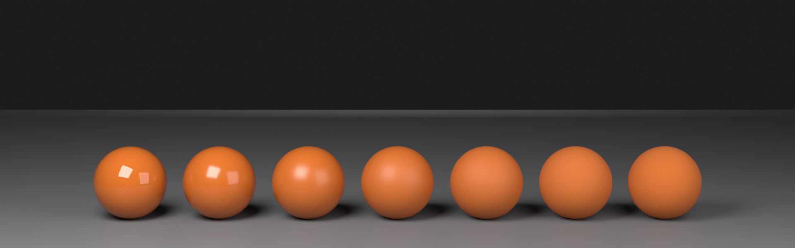
IOR (Index of Refraction)
🔮 IOR Parameter
What it does:
- Controls how much light bends when passing through transparent materials
- Also affects reflection intensity at glancing angles (Fresnel effect)
- Higher IOR = stronger reflections and more bending
- Default: 1.45 (similar to plastic/glass)
Real-world IOR values:
- 1.0: Vacuum, air (no refraction)
- 1.33: Water
- 1.45: Plastic, acrylic (Blender default)
- 1.5: Standard glass
- 1.55: Window glass
- 2.4: Diamond
- Higher values: More dramatic light bending and reflections
When to adjust IOR:
- Mostly important for transparent/translucent materials
- For opaque materials, affects edge reflections (Fresnel)
- Can often leave at default 1.45 for general use
- Adjust when creating specific materials (water, diamond, etc.)
Transmission (Transparency)
🪟 Transmission Parameter
What it does:
- Controls how much light passes through the surface
- 0.0 = fully opaque (light blocked)
- 1.0 = fully transparent (light passes through)
- Creates glass, water, and other see-through materials
How to use transmission:
- For glass: Transmission = 1.0, Roughness = 0.0
- For frosted glass: Transmission = 1.0, Roughness = 0.1-0.3
- For tinted glass: Transmission = 1.0, add color to Base Color
Transmission tips:
- Works best in Cycles (Eevee has limitations)
- Enable "Screen Space Refraction" in Eevee for transparency
- Combine with IOR for realistic glass refraction
- Higher roughness = more blurred transparency
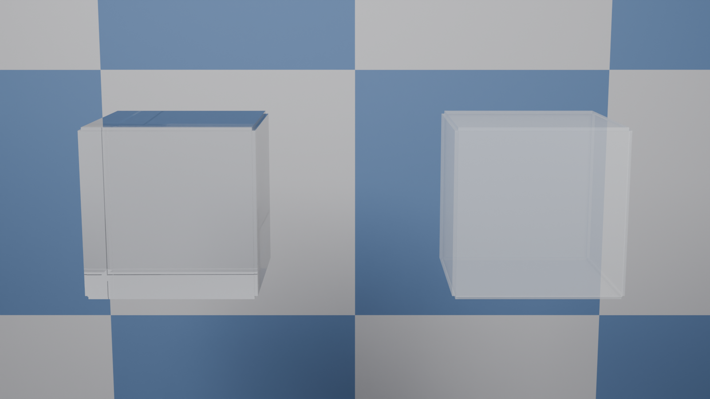
Emission
💡 Emission Parameters
What it does:
- Makes surfaces emit light (self-illumination)
- Creates glowing objects
- Can be colored by Base Color or separate Emission Color
- Emission Strength controls brightness
Emission settings:
- Emission Strength = 0: No glow (default)
- Emission Strength = 1-5: Subtle glow
- Emission Strength = 10-50: Strong light source
- Emission Strength = 100+: Very bright (sun, light bulb)
Use cases:
- LED lights and displays
- Neon signs
- Glowing magical effects
- Light bulbs and lamps
- Emissive sci-fi elements
- Can even use as scene lighting!
Tips:
- Can plug texture into Emission Color for patterns
- Animated emission strength = flickering light effect
- In Cycles, emission actually lights the scene
- In Eevee, use "Bloom" effect for glow appearance
Subsurface Scattering
🧴 Subsurface Parameters
What it does:
- Simulates light penetrating surface and scattering inside
- Essential for organic materials (skin, wax, marble, jade)
- Creates soft, translucent appearance
- More realistic than pure surface shading
Key subsurface parameters:
- Subsurface Weight: How much SSS to apply (0.0 - 1.0)
- Subsurface Radius: How far light travels inside (RGB values)
- Red typically travels farthest
- Controls color of subsurface scattering
- Subsurface Scale: Overall distance multiplier
When to use subsurface:
- Skin: Essential for realistic skin
- Weight: 0.1-0.3
- Radius: (1.0, 0.5, 0.3) for reddish skin tone
- Wax: Candles, translucent materials
- Weight: 0.5-1.0
- Radius: Uniform values like (1.0, 1.0, 1.0)
- Marble: Stone with light penetration
- Weight: 0.1-0.2
- Subtle effect for realism
- Leaves, fruit: Natural translucency
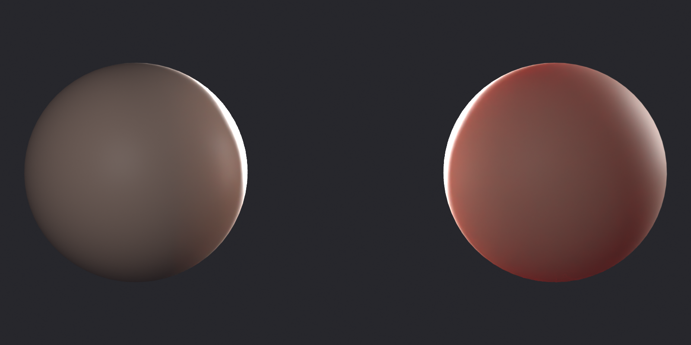
Alpha (Opacity)
👻 Alpha Parameter
What it does:
- Controls surface opacity (different from Transmission!)
- 0.0 = invisible/transparent
- 1.0 = fully opaque (default)
- Used for transparency masks, not glass
Alpha vs. Transmission:
- Alpha: Makes object disappear (no refraction)
- Use for: Cutouts, fading effects, alpha textures
- Example: Leaf texture with transparent background
- Transmission: Light passes through and refracts
- Use for: Glass, water, translucent materials
- Example: Glass bottle
Using alpha textures:
- Plug image texture (with alpha channel) into Alpha input
- Material Properties → Settings → Blend Mode: Alpha Clip or Alpha Blend
- Adjust Alpha Threshold if using Alpha Clip
Normal (Bump/Normal Maps)
⛰️ Normal Input
What it does:
- Fakes surface detail without changing geometry
- Affects how light reflects off surface
- Makes flat surfaces appear to have bumps, scratches, texture
- Crucial for adding detail without heavy geometry
Types of detail maps:
- Normal Map: RGB image encoding surface angles
- Purple/blue-ish color typically
- Most detailed, most common
- Requires Normal Map node
- Bump Map: Grayscale height map
- Black = low, white = high
- Requires Bump node
- Simpler, but less precise
- Displacement Map: Actually moves geometry
- True 3D detail (not fake)
- More expensive, more realistic
- Requires subdivided geometry
Using normal maps:
- Add Image Texture node with normal map image
- Set Color Space to "Non-Color"
- Add Normal Map node (
Shift+A→ Vector → Normal Map) - Connect Image Texture Color → Normal Map Color
- Connect Normal Map Normal → Principled BSDF Normal
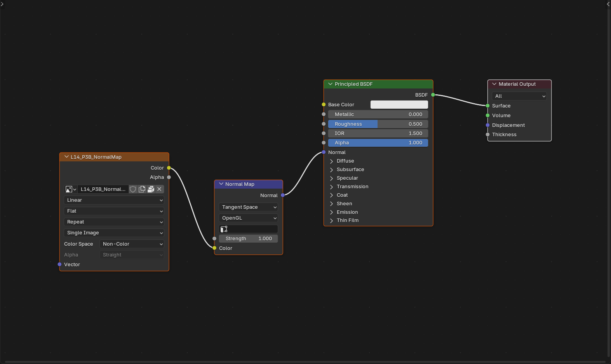
Other Principled BSDF Inputs
🔧 Additional Parameters
Specular:
- Controls reflection intensity for non-metals
- Default: 0.5 (works for most materials)
- Range: 0.0 (no reflection) to 1.0 (strong reflection)
- Rarely needs adjustment in PBR workflow
Specular Tint:
- Tints reflections with base color (for non-metals)
- 0.0 = colorless reflections (physically accurate)
- 1.0 = colored reflections
- Usually keep at 0.0 for realism
Anisotropic:
- Stretches reflections in one direction
- Useful for brushed metal, hair, fabric
- 0.0 = round highlights (default)
- 1.0 = elongated highlights
Anisotropic Rotation:
- Rotates anisotropic highlight direction
- 0.0 - 1.0 (full 360° rotation)
Sheen:
- Adds soft glow at grazing angles
- Perfect for fabric, velvet, carpet
- 0.0 = no sheen, 1.0 = maximum sheen
Sheen Tint:
- Colors the sheen effect
- 0.0 = white sheen, 1.0 = base color sheen
Clearcoat:
- Adds second reflective layer
- Simulates clear coating over base paint (car paint!)
- 0.0 = no clearcoat, 1.0 = full clearcoat layer
Clearcoat Roughness:
- Roughness of clearcoat layer (usually very smooth)
🎯 The 80/20 Rule for Principled BSDF: You can create 80% of materials using just these five inputs: Base Color, Metallic, Roughness, Normal, and occasionally Emission. Master these first before diving into the advanced parameters. Start simple, add complexity only when needed!
🎨 PBR Workflow Fundamentals
Understanding the PBR (Physically Based Rendering) workflow is essential for creating realistic materials that behave correctly under any lighting condition. Let's dive deep into PBR principles and how to apply them in Blender.
The PBR Philosophy
🌟 What Makes PBR Special
Core principles of PBR:
- Energy conservation: Surfaces can't reflect more light than they receive
- Total reflected + absorbed light ≤ incoming light
- Prevents unrealistic over-bright materials
- Principled BSDF enforces this automatically
- Physically accurate parameters: Values based on real-world measurements
- IOR values from physics tables
- Metallic is binary (metal or not)
- Measured roughness values
- Consistent results: Materials look correct in any lighting
- No "baking in" lighting assumptions
- Portable between scenes and projects
- Works in games, films, archviz equally well
The Metallic Workflow
⚡ Metal vs. Non-Metal
Understanding the fundamental distinction:
Metals (Metallic = 1.0):
- No diffuse reflection: All reflection is specular (mirror-like)
- Colored reflections: Reflections match base color
- Gold reflects yellow light
- Copper reflects orange light
- This is why metals have their characteristic colors!
- High reflectivity: Metals are always reflective (unless very rough)
- Base color represents reflection color: Not "surface color" like non-metals
Non-metals (Metallic = 0.0):
- Diffuse + specular reflection: Both scattered and mirror reflections
- Colorless reflections: Reflections are white/environment color
- Wood, plastic, stone reflect white light
- Base color shows as surface color, not reflection color
- Variable reflectivity: Can be very matte to somewhat shiny
- Base color is surface color: The color you see in diffuse light
The rule of thumb:
- If it conducts electricity → Metallic = 1.0
- Everything else → Metallic = 0.0
- No in-between (except for artistic effects or oxidized metals)
Roughness and Microsurface
🔬 The Microsurface Theory
What roughness really means:
- All surfaces have microscopic bumps and valleys
- At macro scale, surface looks smooth
- At micro scale, it's a chaotic landscape
- Roughness describes this micro-geometry statistically
How roughness affects light:
- Smooth surface (low roughness):
- Microfacets mostly aligned
- Light reflects in consistent direction
- Sharp, clear reflections
- Small bright highlight
- Rough surface (high roughness):
- Microfacets randomly oriented
- Light scatters in all directions
- Blurry, diffuse reflections
- Large, soft highlight
Roughness variation is crucial:
- Real materials never have uniform roughness
- Wear patterns: Edges smoother, recesses rougher
- Use texture maps for variation
- Even subtle variation adds huge realism boost
PBR Texture Maps
🗺️ Standard PBR Map Types
The complete PBR texture set:
- Base Color (Albedo/Diffuse):
- RGB texture
- Pure color information, no lighting
- Plugs into: Base Color input
- Critical rule: Should contain NO shadows or highlights!
- Roughness:
- Grayscale texture
- Black = smooth, white = rough
- Plugs into: Roughness input
- Often inverted from "Glossiness" maps (white = smooth)
- Metallic:
- Grayscale texture (usually binary: black or white)
- Black = non-metal, white = metal
- Plugs into: Metallic input
- Often solid white/black, or masks metal parts
- Normal Map:
- RGB texture (purple/blue-ish)
- Encodes surface angle information
- Requires Normal Map node
- Plugs into: Normal input via Normal Map node
- Height/Displacement:
- Grayscale texture
- Black = low, white = high
- Can be used for bump or actual displacement
- Optional, often combined with normal
- Ambient Occlusion (AO):
- Grayscale texture
- Darkens crevices and contact areas
- Often multiplied with base color
- Adds depth and grounding
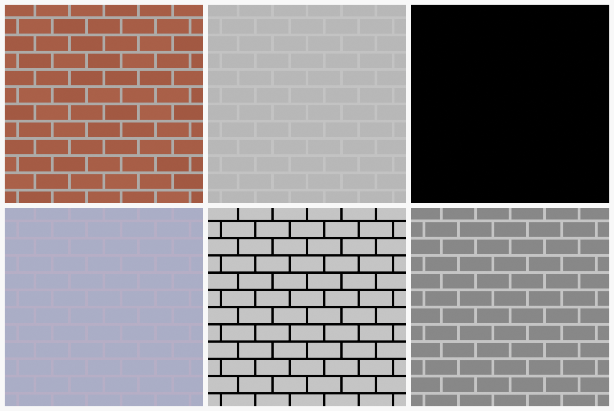
Setting Up PBR Materials
🔧 Complete PBR Material Setup
Step-by-step workflow:
- Prepare texture files:
- Gather all PBR maps (Color, Roughness, Metallic, Normal, etc.)
- Ensure consistent naming (Material_BaseColor, Material_Roughness, etc.)
- Check resolution matches (all same size)
- Add Image Texture nodes:
Shift+A→ Texture → Image Texture- Add one for each map type
- Load corresponding texture file
- Set color space correctly:
- Base Color: sRGB (color space)
- Roughness, Metallic, AO, Height: Non-Color (linear)
- Normal Map: Non-Color
- This is CRITICAL for correct results!
- Connect to Principled BSDF:
- Base Color texture → Base Color input
- Roughness texture → Roughness input
- Metallic texture → Metallic input
- Add Normal Map node (if using normal map):
Shift+A→ Vector → Normal Map- Image Texture (normal) → Normal Map Color
- Normal Map Normal → Principled BSDF Normal
- Mix AO with Base Color (optional but recommended):
- Add Math node → Multiply
- Base Color → Value 1
- AO → Value 2
- Result → Principled BSDF Base Color
sRGB] --> B[Principled BSDF] C[Roughness Texture
Non-Color] --> B D[Metallic Texture
Non-Color] --> B E[Normal Texture
Non-Color] --> F[Normal Map Node] F --> B B --> G[Material Output] style B fill:#667eea,stroke:#333,stroke-width:2px,color:#fff style G fill:#4CAF50,stroke:#333,stroke-width:2px,color:#fff
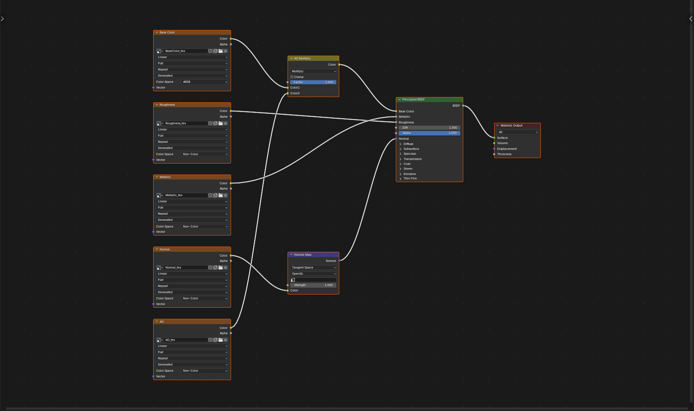
PBR Value Ranges
📊 Physically Accurate Value Guidelines
Base Color values (in sRGB, 0-255 range):
- Very dark (coal, charcoal): 30-50 (avoid going darker)
- Dark materials (dark wood, asphalt): 50-80
- Mid-range (brick, leather, cloth): 80-180
- Light materials (concrete, light wood): 180-220
- Very light (snow, fresh paint): 220-245 (avoid going lighter)
- Never use pure black (0) or pure white (255)
Metallic values:
- Non-metals: 0.0
- Metals: 1.0
- Exceptions: 0.5-0.8 for dirty/oxidized metals (artistic choice)
Roughness values (covered earlier, but worth repeating):
- Polished metal/mirror: 0.0-0.1
- Glossy paint/plastic: 0.2-0.4
- Satin/semi-gloss: 0.4-0.6
- Matte/rough: 0.6-0.8
- Very rough (fabric, clay): 0.8-1.0
Common PBR Mistakes
⚠️ PBR Pitfalls to Avoid
Mistake 1: Baked lighting in Base Color
- Problem: Base Color texture contains shadows or highlights
- Result: Double lighting (baked + real-time)
- Fix: Use pure albedo textures with no lighting information
Mistake 2: Wrong color space
- Problem: Using sRGB for roughness/normal/metallic maps
- Result: Incorrect material behavior, wrong colors
- Fix: Set Non-Color for all data maps (not color maps)
Mistake 3: Overly saturated base colors
- Problem: Using 100% saturated colors
- Result: Unrealistic, "video game-y" look
- Fix: Reduce saturation to 60-80% for most materials
Mistake 4: Uniform roughness
- Problem: Single roughness value across entire surface
- Result: Artificial, CG appearance
- Fix: Use roughness texture with variation
Mistake 5: Mixing metallic workflow with specular workflow
- Problem: Trying to use old-school specular maps
- Result: Confusion and incorrect materials
- Fix: Stick to metallic workflow for PBR
Testing Your PBR Materials
✅ Material Quality Checklist
How to verify PBR correctness:
- Check in multiple lighting conditions:
- Direct sunlight
- Indoor lighting
- Overcast/diffuse
- Should look correct in all scenarios
- Verify reflections look natural:
- Not too bright or too dim
- Appropriate sharpness for material type
- Colors make sense (colored for metals, white for non-metals)
- Check at grazing angles:
- All materials should show increased reflection at edges (Fresnel)
- If edges look wrong, IOR might be incorrect
- Compare to reference photos:
- Find real-world photos of similar material
- Match the behavior and appearance
- Adjust until they align
🎨 Procedural Textures
Procedural textures are mathematically generated patterns that require no image files. They're infinitely scalable, highly customizable, and perfect for creating materials without external resources. Let's master Blender's powerful procedural toolkit!
What Are Procedural Textures?
🔢 Math-Generated Textures
The concept:
- Textures created by mathematical algorithms, not images
- Generated on-the-fly during rendering
- No image files needed (saves disk space!)
- Infinitely scalable without loss of quality
Advantages of procedural textures:
- No UV unwrapping required: Can work on any geometry
- Infinite resolution: Zoom in forever, always sharp
- Small file size: Just nodes, no image data
- Easy to adjust: Tweak parameters instead of repainting
- Fully customizable: Endless variations possible
- Seamless tiling: Most procedurals tile perfectly
Disadvantages:
- Can be complex to set up for specific looks
- Hard to achieve "handmade" artistic detail
- May require more render time (math calculations)
- Not ideal for unique, painted textures
Best uses:
- Generic materials (wood, stone, metal)
- Tiling patterns and backgrounds
- Variation and randomness (dirt, wear, scratches)
- Quick material creation and iteration
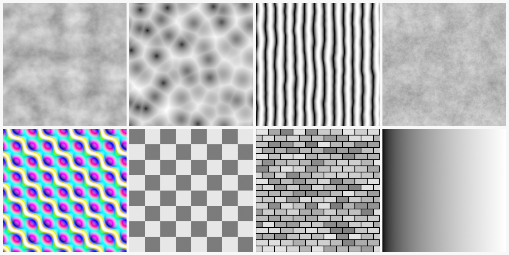
Essential Procedural Texture Nodes
🎨 The Procedural Toolkit
Noise Texture:
- Random, cloud-like patterns
- Most versatile procedural texture
- Great for: Organic variation, dirt, scratches, roughness maps
- Key settings:
- Scale: Size of noise pattern
- Detail: Fractal iteration (more = finer detail)
- Roughness: Smoothness vs. contrast
Voronoi Texture:
- Cellular patterns (like cracked earth or cells)
- Creates organic-looking divisions
- Great for: Stone tiles, reptile skin, cellular structures
- Key settings:
- Feature: F1 (closest cell), F2 (second closest), Distance, etc.
- Scale: Cell size
- Randomness: Regularity vs. chaos
Wave Texture:
- Linear wave patterns
- Great for: Rings, stripes, concentric patterns
- Modes: Bands, Rings, Saw, Sine
- Uses: Wood grain, water ripples, abstract patterns
Musgrave Texture:
- Advanced fractal noise
- More control than basic Noise
- Great for: Terrain, rock surfaces, organic detail
- Multiple modes: Multifractal, Ridged, Hybrid, etc.
Magic Texture:
- Psychedelic, abstract patterns
- Great for: Stylized materials, artistic effects
- Less "natural" but interesting for creative work
Checker Texture:
- Simple checkerboard pattern
- Great for: Tiles, testing UVs, geometric designs
- Very controllable, crisp results
Brick Texture:
- Instant brick/tile pattern
- Great for: Walls, floors, masonry
- Has mortar and brick color outputs
- Adjustable brick size, offset, mortar width
Gradient Texture:
- Smooth color gradients
- Great for: Masks, falloffs, simple variations
- Types: Linear, Quadratic, Radial, Spherical
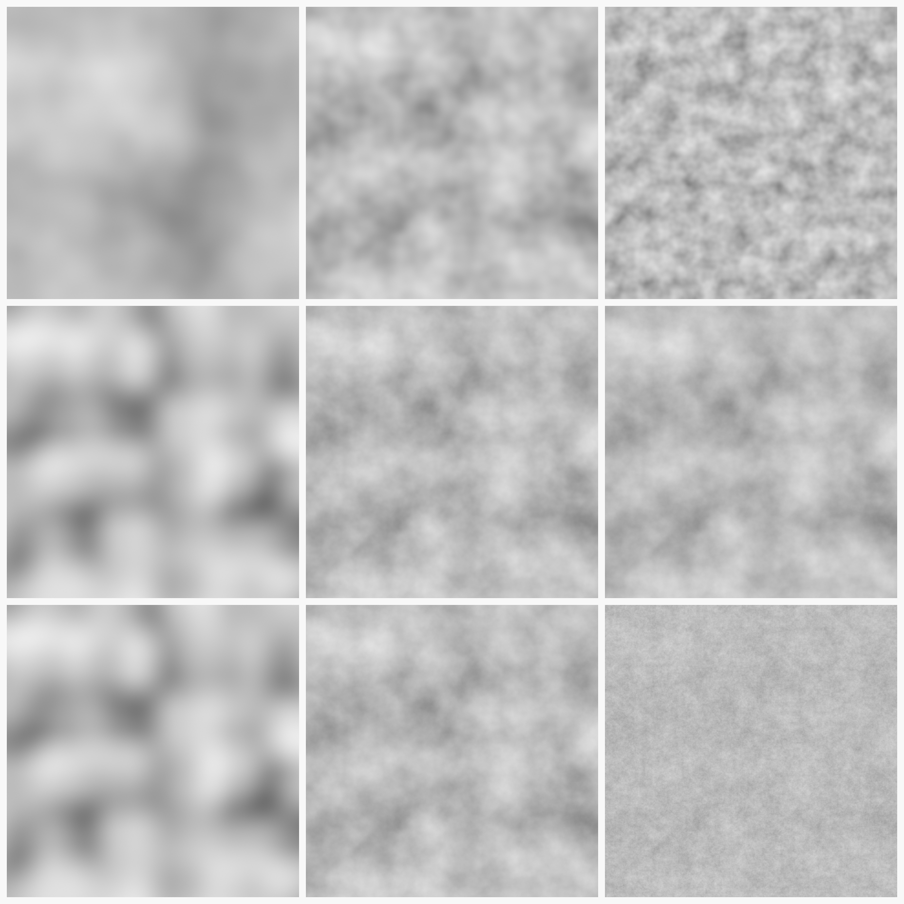
Noise Texture Deep Dive
☁️ Mastering Noise
Why Noise is the most important procedural:
- Foundation for countless materials
- Adds organic randomness to everything
- Combined with ColorRamp, creates infinite possibilities
Noise Texture parameters explained:
- Scale: Overall size of pattern
- Small scale (10-50) = fine, detailed noise
- Large scale (1-5) = broad, sweeping variation
- Adjust based on object size and desired effect
- Detail: Fractal complexity (0-15)
- 0 = Simple, smooth blobs
- 5-8 = Good balance (typical use)
- 15 = Maximum detail, slower render
- Roughness: Smoothness of transitions (0-1)
- 0 = Very smooth, cloudy
- 0.5 = Balanced (default)
- 1 = Harsh, contrasty
- Distortion: Warping effect (0+)
- 0 = No distortion
- 1-5 = Organic warping
- Higher = More chaos
Noise outputs:
- Fac: Grayscale value (0-1)
- Color: RGB version (for color variation)
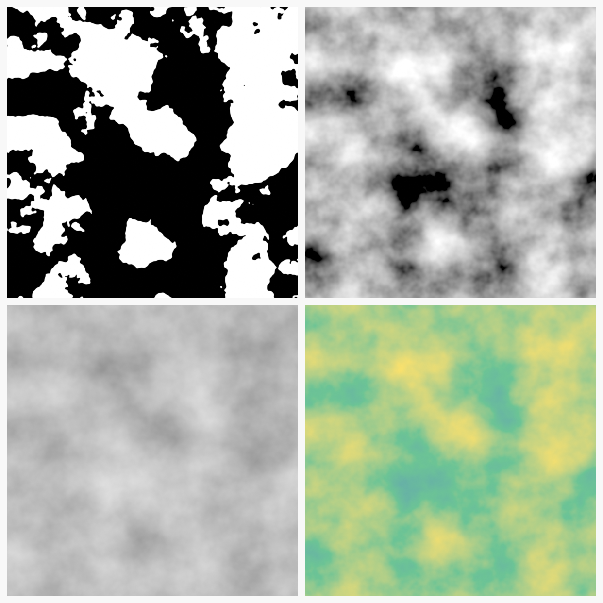
ColorRamp: The Procedural Powerhouse
🌈 ColorRamp Node Magic
What ColorRamp does:
- Remaps input values to custom color/value ranges
- Transforms procedural noise into useful patterns
- Essential for controlling procedural textures
- Like "Levels" or "Curves" in Photoshop, but for 3D
How to use ColorRamp:
- Add ColorRamp node:
Shift+A→ Converter → ColorRamp - Connect procedural texture Fac → ColorRamp Fac
- Adjust color stops (the markers on the gradient)
- Move stops to remap values
- Add stops by clicking on bar
- Delete stops by dragging off the bar
ColorRamp techniques:
- Thresholding: Push stops close together
- Creates hard edge between colors
- Turns noise into distinct regions
- Contrast increase: Move black/white stops inward
- Brightens lights, darkens darks
- Increases visual impact
- Inversion: Swap black and white stop positions
- Reverses the pattern
- Color variation: Use actual colors instead of B&W
- Creates color zones
- Great for stylized materials
Interpolation modes:
- Linear: Smooth transitions (default)
- Constant: Hard steps, no blending
- B-Spline: Extra smooth curves
- Cardinal: Custom ease in/out
💡 The Noise + ColorRamp Formula: 80% of procedural materials follow this pattern: (1) Noise Texture generates randomness, (2) ColorRamp shapes that randomness into useful values, (3) Result plugs into Base Color, Roughness, or other inputs. Master this combination and you'll unlock endless material possibilities!
🗺️ Texture Mapping and Coordinates
Texture coordinates determine how textures (both image and procedural) map onto your 3D surfaces. Understanding texture mapping is essential for controlling how materials appear on your models.
Understanding Texture Coordinates
📍 What Are Texture Coordinates?
The concept:
- Every point on a 3D surface needs a corresponding point in texture space
- Texture coordinates (UV coordinates) define this mapping
- Tell Blender "this 3D point maps to this 2D texture location"
- Different coordinate systems for different needs
Why coordinates matter:
- Control texture scale (size on surface)
- Control texture rotation and orientation
- Determine how textures repeat or stretch
- Enable effects like triplanar mapping, spherical projection
Texture Coordinate Node
🎯 The Texture Coordinate Node
How to use it:
- Add:
Shift+A→ Input → Texture Coordinate - Provides various coordinate systems as outputs
- Connect to Vector input of texture nodes
- Controls how texture maps to surface
Available coordinate systems:
- Generated:
- Automatically generated based on object bounds
- 0-1 range covering entire object
- Good for procedural textures
- Stretches on non-uniform objects
- UV:
- Uses UV unwrap coordinates
- Requires proper UV unwrapping
- Best for image textures
- Most common for painted textures
- Object:
- Based on object's local coordinate system
- Origin point = (0,0,0)
- Good for aligning textures to object space
- Moves with object
- Camera:
- Based on camera view
- Useful for projection mapping effects
- Changes when camera moves
- Window:
- Based on render window/viewport
- Useful for screen-space effects
- Reflection:
- Reflection vector coordinates
- Useful for environment mapping
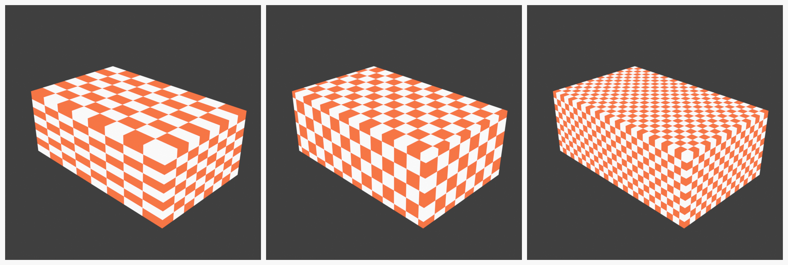
Mapping Node
🔧 The Mapping Node
What it does:
- Transforms texture coordinates
- Allows scaling, rotation, and translation of textures
- Essential for controlling procedural texture appearance
- Insert between Texture Coordinate and Texture nodes
How to use it:
- Add:
Shift+A→ Vector → Mapping - Connect: Texture Coordinate output → Mapping Vector
- Connect: Mapping Vector → Texture Vector input
- Adjust Location, Rotation, Scale parameters
Mapping parameters:
- Location (X, Y, Z):
- Shifts texture position
- Positive values move texture in that direction
- Animatable for moving texture effects
- Rotation (X, Y, Z):
- Rotates texture around axes
- Values in radians or degrees (toggle in header)
- Useful for aligning procedural patterns
- Scale (X, Y, Z):
- Controls texture size/tiling
- Higher values = smaller texture (more repetitions)
- Lower values = larger texture (fewer repetitions)
- Independent control per axis
Type dropdown:
- Point: Standard texture mapping (default)
- Texture: Includes texture-specific transformations
- Vector: Directional vector transformation
- Normal: For normal map transformations
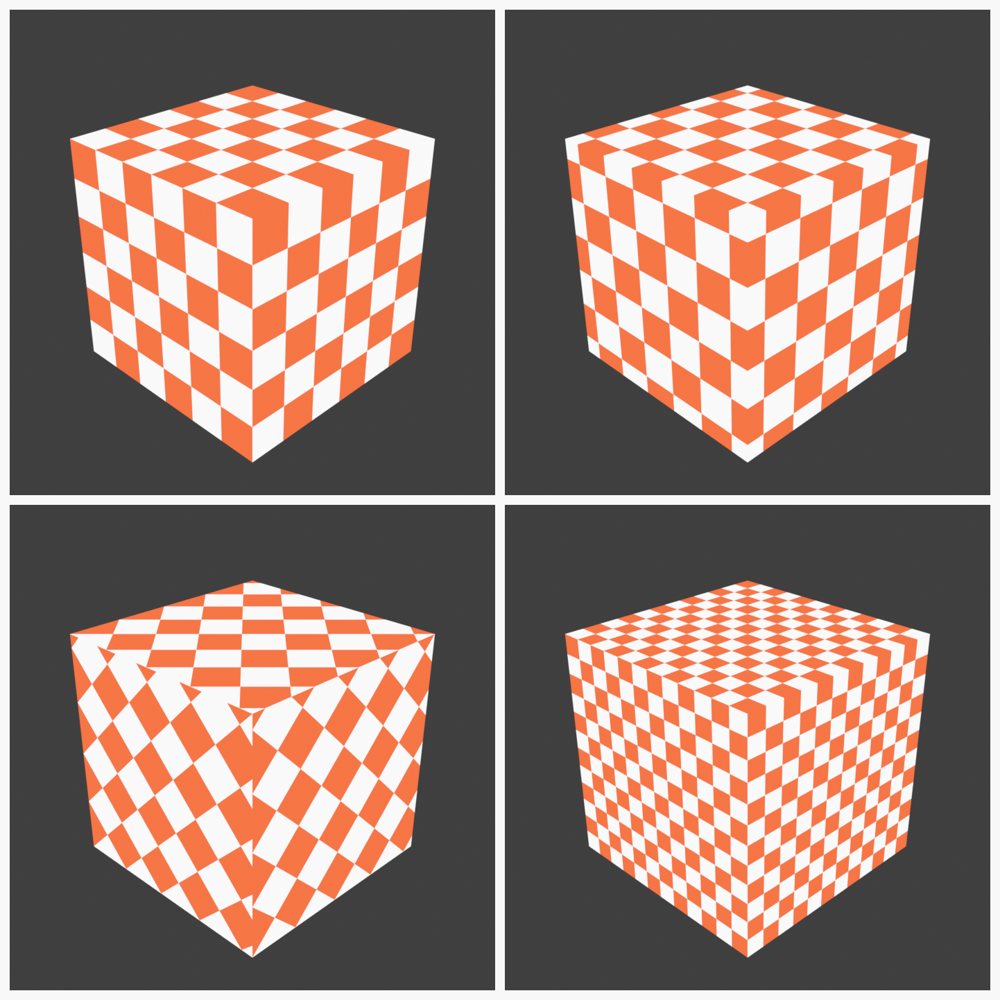
Common Texture Mapping Setups
🎨 Standard Mapping Workflows
For image textures (painted/photo):
- Texture Coordinate (UV) → Image Texture Vector
- No Mapping node needed (UVs already positioned)
- Relies on proper UV unwrapping
For procedural textures:
- Texture Coordinate (Generated or Object) → Mapping → Procedural Texture
- Use Mapping to control scale and orientation
- Experiment with different coordinate types
For world-space textures:
- Texture Coordinate (Object) → Mapping → Texture
- Texture stays fixed in world space
- Good for ground textures, environment effects
Triplanar Mapping
📦 Triplanar Projection
What is triplanar mapping?
- Projects texture from three perpendicular directions (X, Y, Z)
- Blends projections based on surface normal
- Eliminates stretching on complex geometry
- No UV unwrapping required!
When to use triplanar:
- Organic shapes with complex topology
- Terrain and landscapes
- When UV unwrapping is impractical
- Quick texturing without UVs
How to set up (basic method):
- Create three Image Texture nodes (X, Y, Z projections)
- Use Separate XYZ node to split normal vector
- Use Math nodes to create blend weights
- Mix textures based on surface orientation
- Complex but eliminates distortion!
Note: Triplanar is advanced; start with standard mapping first!
Box Mapping
📦 Box Projection Technique
What it does:
- Similar to triplanar but projects from 6 directions (cube faces)
- Built into some procedural textures (like Noise)
- Reduces stretching on cubic/box-like objects
How to use:
- Some procedural textures have "Box" option
- Automatically applies box projection
- Easier than manual triplanar setup
- Check texture node for Projection dropdown
Vector Math for Advanced Mapping
🧮 Vector Manipulation
Vector Math node:
- Add:
Shift+A→ Converter → Vector Math - Performs mathematical operations on vectors
- Useful for custom coordinate transformations
Common vector operations:
- Add: Combine two vector inputs
- Multiply: Scale vectors
- Normalize: Make vector length = 1
- Dot Product: Calculate angle between vectors
Creative uses:
- Combine multiple coordinate systems
- Create custom projection types
- Animated coordinate transformations
- Advanced procedural effects
🎭 Mixing Shaders and Materials
The real power of Blender's node system comes from combining multiple shaders and materials. Let's learn how to mix materials to create complex, realistic surfaces.
Mix Shader Node
🔀 The Mix Shader
What it does:
- Blends two shaders together
- Factor controls the mix (0.0 = first shader, 1.0 = second shader)
- Can use textures to control mixing
- Foundation of complex materials
How to use it:
- Add:
Shift+A→ Shader → Mix Shader - Connect first shader to Shader input 1
- Connect second shader to Shader input 2
- Adjust Fac (Factor) slider to blend (0.0 - 1.0)
- Or connect texture/mask to Fac for complex mixing
- Connect Mix Shader output to Material Output
Factor input options:
- Constant value: Manual slider (simple 50/50 mix, etc.)
- Noise texture: Random variation between shaders
- Image texture: Mask defining where each shader appears
- ColorRamp: Shaped procedural masks
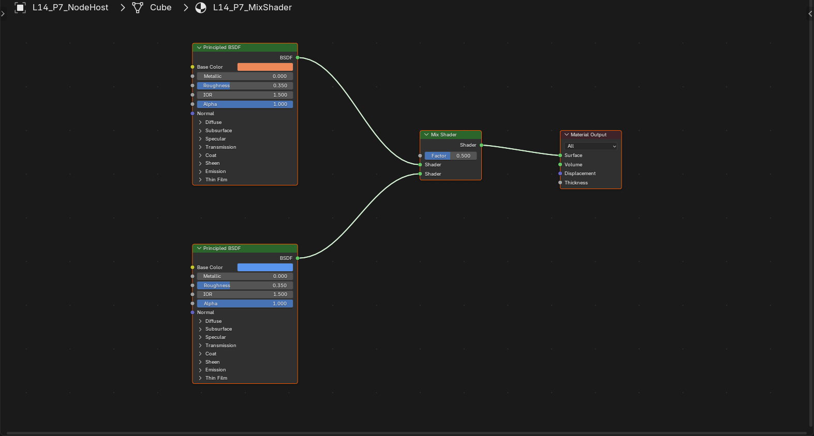
Common Shader Mixing Scenarios
🎨 Practical Mixing Examples
Scenario 1: Rust on metal
- Shader 1: Clean metal (Metallic = 1.0, low roughness)
- Shader 2: Rust (Metallic = 0.0, orange color, high roughness)
- Mix Factor: Noise texture through ColorRamp (creates rust patches)
- Result: Metal with realistic rust variation
Scenario 2: Dirty floor
- Shader 1: Clean tile (low roughness, light color)
- Shader 2: Dirt (high roughness, dark color)
- Mix Factor: Noise texture (dirt accumulates randomly)
- Result: Realistic dirty floor
Scenario 3: Worn paint
- Shader 1: Fresh paint (smooth, saturated)
- Shader 2: Bare surface underneath (rougher, different color)
- Mix Factor: Noise + edge detection (wear on edges)
- Result: Paint wearing away naturally
Scenario 4: Wet/dry surfaces
- Shader 1: Dry material (higher roughness)
- Shader 2: Wet material (lower roughness, darker)
- Mix Factor: Gradient or noise (wet in recesses)
- Result: Partially wet surface
Layering Multiple Shaders
🎂 Multiple Mix Shader Layers
Chaining Mix Shaders:
- Can stack multiple Mix Shader nodes
- Each adds another layer of complexity
- Think of it like layering in Photoshop
Example: Complex metal surface
- Base layer: Clean polished metal
- Mix 1: Add fingerprints (subtle roughness variation)
- Mix 2: Add scratches (linear marks)
- Mix 3: Add rust patches (color and roughness change)
- Mix 4: Add dust (slight desaturation)
Organization tip: Use Frames to group related shader chains
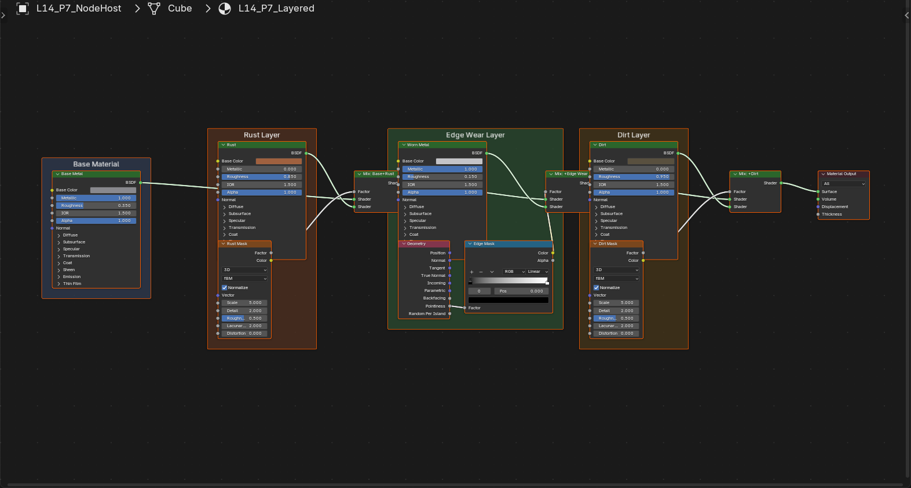
Add Shader Node
➕ The Add Shader
What it does:
- Adds two shaders together (instead of mixing)
- Both shaders contribute to final result
- Useful for emissive + surface shading
- Can create unrealistic results if not careful (breaks energy conservation)
When to use Add Shader:
- Adding emission to surface:
- Principled BSDF (surface properties)
- + Emission Shader (glow)
- Result: Glowing object with surface detail
- Combining transparency with emission:
- Glass shader
- + Emission shader
- Result: Glowing glass
Caution: Add Shader can break PBR energy conservation—use sparingly!
Using Masks for Precise Control
🎭 Mask-Based Mixing
What are masks?
- Grayscale images/textures controlling where each shader appears
- Black = first shader, White = second shader, Gray = blend
- Plugged into Mix Shader Factor input
Creating masks:
- Painted masks: Hand-painted in texture painting mode
- Procedural masks: Noise, Voronoi, etc. through ColorRamp
- Vertex colors: Paint directly on mesh vertices
- Geometry-based: Use Geometry node outputs (Pointiness, etc.)
Mask workflow:
- Create or import mask texture
- Add Image Texture or Procedural node
- Optionally adjust with ColorRamp
- Connect to Mix Shader Fac input
- Fine-tune mask to control mixing precisely
Geometry Node for Smart Mixing
📐 Geometry-Based Mixing
The Geometry node:
- Add:
Shift+A→ Input → Geometry - Provides geometric information about surface
- Useful for procedural wear, dirt, and effects
Useful Geometry outputs:
- Pointiness:
- Detects convex (positive) vs. concave (negative) areas
- Great for edge wear, dust in crevices
- Use with ColorRamp to isolate edges or recesses
- Random Per Island:
- Random value per UV island
- Useful for color variation
- Position:
- World-space position
- Can use for gradients (height-based effects)
- Normal:
- Surface normal direction
- Useful for facing-based effects
Example: Edge wear using Pointiness
- Geometry node → Pointiness output
- ColorRamp to isolate positive values (edges)
- Connect to Mix Shader Fac
- Shader 1: Base material, Shader 2: Worn/lighter material
- Result: Natural wear on edges!
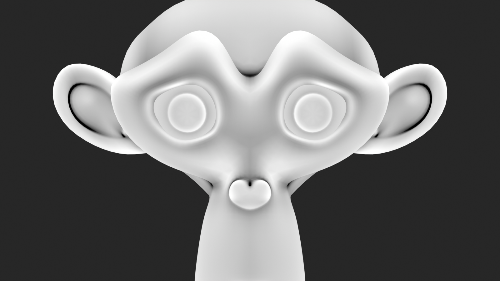
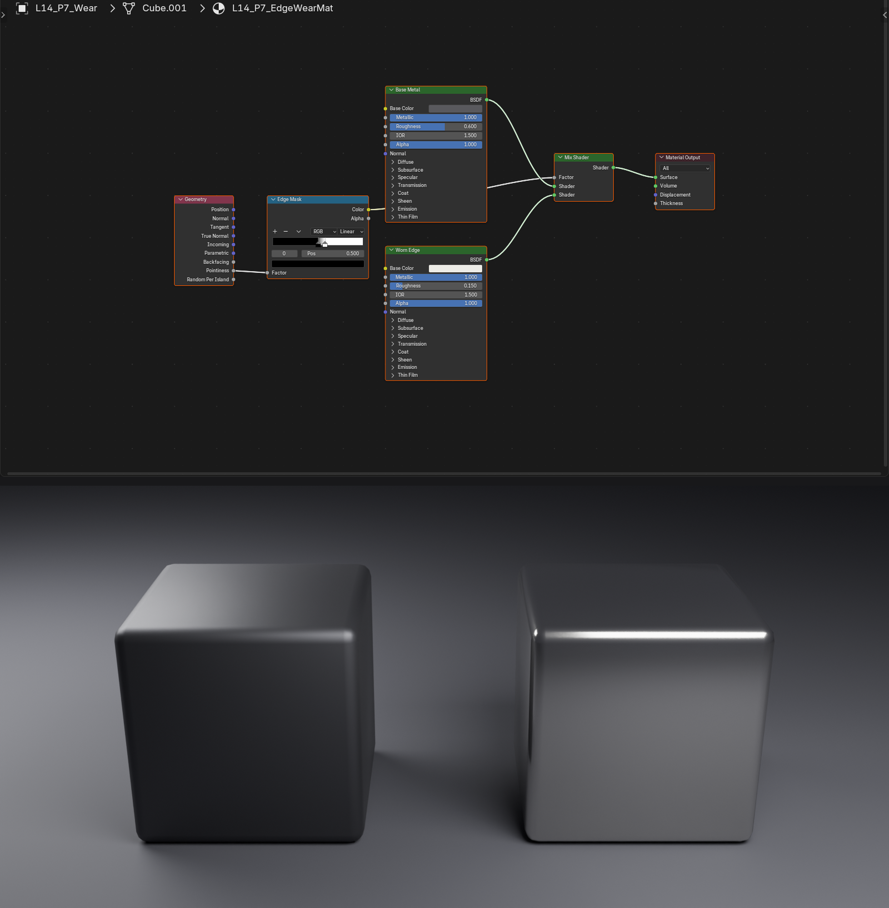
Advanced Mixing: Fresnel Effect
💎 Fresnel Mixing
What is Fresnel?
- Surfaces become more reflective at grazing angles
- Named after physicist Augustin-Jean Fresnel
- Natural phenomenon (look at water or glass at an angle)
- Principled BSDF includes this automatically, but can enhance manually
Fresnel node:
- Add:
Shift+A→ Input → Fresnel - Outputs value based on viewing angle
- 0.0 when looking straight on, 1.0 at glancing angles
- IOR parameter controls strength
Using Fresnel for mixing:
- Connect Fresnel Fac → Mix Shader Fac
- Shader 1: Diffuse/matte appearance (straight-on view)
- Shader 2: Reflective/glossy appearance (glancing angle)
- Result: Natural angle-dependent reflection
Creative uses:
- Fabric with sheen at edges
- Car paint with angle-dependent color
- Stylized toon shader with rim lighting
🎯 The Shader Mixing Philosophy: Start simple with a single shader. Add complexity only where needed. Each Mix Shader should serve a clear purpose (rust, dirt, wear, etc.). Too much mixing creates slow, hard-to-edit materials. The goal is realistic complexity with manageable node trees!
🌟 Creating Realistic Materials
Now let's put everything together and create specific realistic materials. We'll build complete material setups for common material types, learning the exact parameters and techniques for each.
Glass Material
🪟 Creating Realistic Glass
Basic glass setup:
- Start with Principled BSDF (default material)
- Transmission: 1.0 (fully transparent)
- Roughness: 0.0 (perfectly smooth)
- IOR: 1.45-1.55 (glass range)
- 1.45 = Acrylic/plastic
- 1.5 = Standard glass
- 1.55 = Dense glass
- Base Color: White (or slight tint for colored glass)
Glass variations:
- Frosted glass:
- Roughness: 0.1-0.4
- Higher roughness = more diffusion
- Tinted glass:
- Base Color: Colored (green, blue, amber)
- Keep slightly desaturated
- Dirty glass:
- Add slight roughness variation (noise texture)
- Mix in subtle dirt layer on surface
Render settings for glass (Eevee):
- Material Settings → Screen Space Refraction: ON
- Render Properties → Screen Space Reflections: ON
- Note: Cycles handles glass automatically (more accurate)
Pro tip: Slightly increase Specular to 0.6-0.7 for extra "glass-iness"
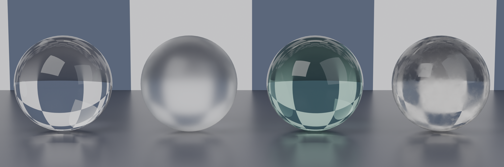
Metal Materials
🏆 Creating Various Metals
Gold material:
- Base Color: RGB (1.0, 0.766, 0.336) or hex #FFC355
- Metallic: 1.0
- Roughness: 0.1-0.3 (polished gold)
- Roughness: 0.4-0.6 (brushed gold)
Silver/Chrome material:
- Base Color: Light gray RGB (0.95, 0.95, 0.95)
- Metallic: 1.0
- Roughness: 0.0-0.15 (mirror chrome)
- Roughness: 0.2-0.4 (brushed steel)
Copper material:
- Base Color: RGB (0.955, 0.637, 0.538) or hex #F4A289
- Metallic: 1.0
- Roughness: 0.15-0.35
Iron/Steel material:
- Base Color: Medium gray RGB (0.56, 0.57, 0.58)
- Metallic: 1.0
- Roughness: 0.3-0.5 (raw steel)
- Add variation: Noise texture in roughness for realism
Aluminum material:
- Base Color: Light gray RGB (0.91, 0.92, 0.92)
- Metallic: 1.0
- Roughness: 0.25-0.45
- Anisotropic: 0.3-0.5 (for brushed aluminum)
Adding realism to metals:
- Plug Noise texture into Roughness (subtle variation)
- Add fingerprints with very low-opacity noise
- Mix in rust/oxidation using Mix Shader
- Add scratches with procedural lines
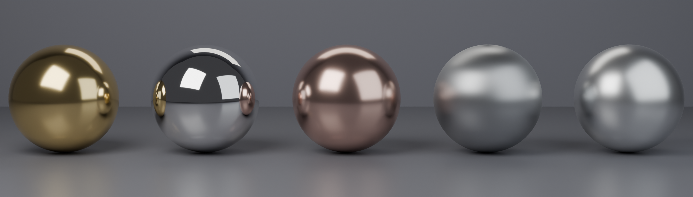
Wood Material
🌲 Procedural Wood
Basic procedural wood setup:
- Create wood grain pattern:
- Add Wave Texture (Rings mode)
- Or Noise Texture with high distortion
- Connect through ColorRamp
- Add to Mapping node:
- Texture Coordinate (Object) → Mapping
- Rotate around one axis to align grain
- Adjust scale for grain density
- Create wood colors:
- ColorRamp with 2-4 color stops
- Dark brown (grain lines)
- Medium brown (base wood)
- Light tan (highlights)
- Connect to Principled BSDF:
- ColorRamp Color → Base Color
- Metallic: 0.0
- Roughness: 0.4-0.6 (raw wood) or 0.1-0.3 (polished)
- Add bump for texture:
- Same noise pattern → Bump node → Normal input
- Strength: 0.1-0.3
Wood color schemes:
- Oak: Medium brown (#8B6F47) to tan (#D4A574)
- Walnut: Dark brown (#3D2817) to medium brown (#6B4423)
- Pine: Light tan (#E8C896) to yellow-brown (#C19A6B)
- Cherry: Reddish-brown (#8B4513) to light red-tan (#D2691E)
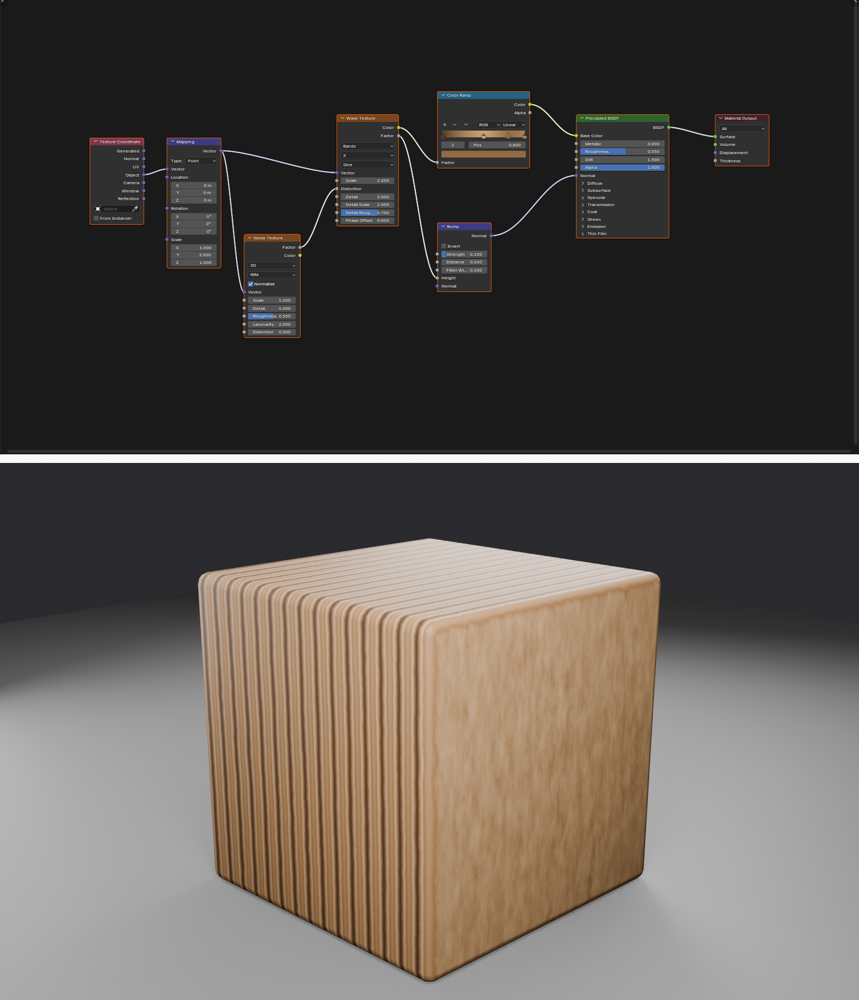
Plastic Material
🎨 Creating Plastic
Glossy plastic setup:
- Base Color: Any color (plastic can be any hue)
- Metallic: 0.0
- Roughness: 0.2-0.4 (smooth, glossy plastic)
- Specular: 0.5 (default works well)
Matte plastic setup:
- Roughness: 0.6-0.8 (higher = more matte)
- Everything else same as glossy
Transparent plastic (like bottles):
- Transmission: 0.9-1.0
- Roughness: 0.05-0.15
- IOR: 1.45 (plastic IOR)
- Base Color: Slight tint if colored plastic
Adding realism:
- Slight roughness variation with noise
- Fingerprints and smudges (low-opacity noise in roughness)
- Scratches (linear patterns)
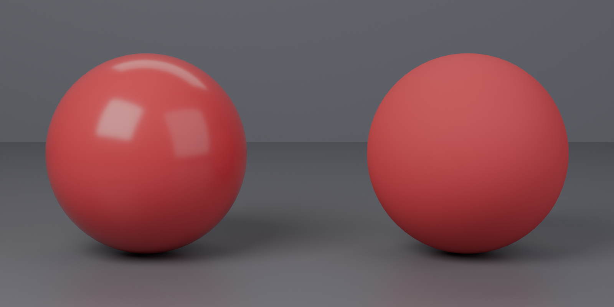
Stone/Rock Material
🪨 Procedural Stone
Basic stone setup:
- Base color variation:
- Noise Texture (scale 5-15)
- Through ColorRamp
- Gray to slightly warm gray
- 2-3 color stops for subtle variation
- Add surface detail:
- Voronoi or Musgrave texture
- Connect to Bump node
- Strength: 0.3-0.8
- Creates rocky surface irregularities
- Principled BSDF settings:
- Metallic: 0.0
- Roughness: 0.7-0.9 (stone is quite rough)
- Subsurface (optional): 0.05-0.15 for marble/translucent stone
Stone type variations:
- Granite: High detail noise, salt-and-pepper colors
- Marble: Wave texture for veins, subsurface scattering
- Sandstone: Warm colors, moderate roughness, layered appearance
- Concrete: Uniform gray, high roughness, subtle noise variation
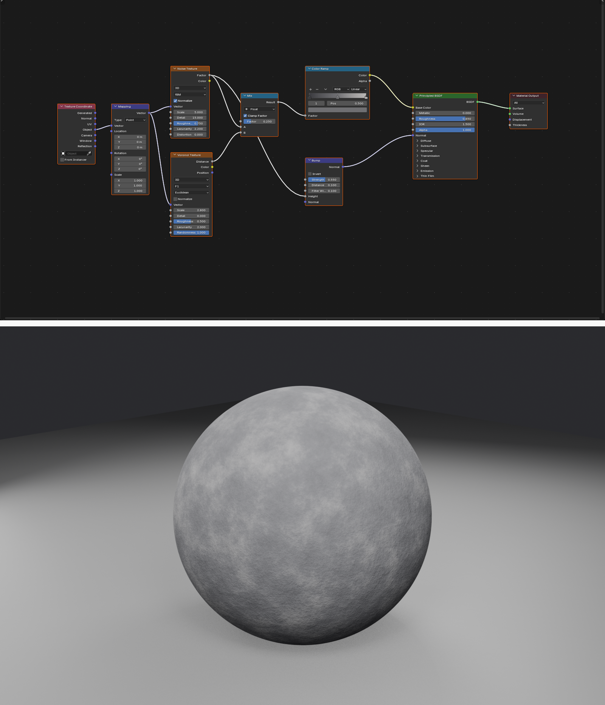
Fabric Material
🧵 Creating Fabric/Cloth
Basic fabric setup:
- Base Color: Any fabric color
- Metallic: 0.0
- Roughness: 0.8-1.0 (very matte)
- Sheen: 0.3-0.7 (fabric characteristic glow)
- Sheen Tint: 0.5-0.8 (colored sheen)
Velvet/Carpet:
- Increase Sheen to 0.8-1.0
- Roughness: 1.0
- Strong sheen effect at grazing angles
Silk/Satin:
- Roughness: 0.2-0.4 (much smoother)
- Anisotropic: 0.5-0.8 (thread direction)
- Less sheen than velvet
Adding fabric detail:
- Bump map for weave pattern
- Noise for color variation
- Normal map for detailed cloth texture
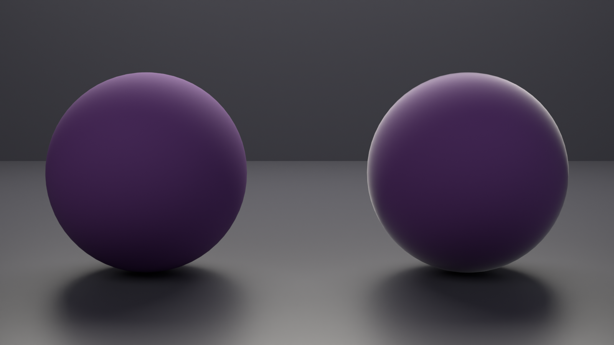
Water Material
💧 Creating Water
Basic water setup:
- Transmission: 1.0 (fully transparent)
- Roughness: 0.0-0.05 (very smooth)
- IOR: 1.33 (water's IOR)
- Base Color: Slight blue tint (#E0F5FF or similar)
Adding water movement/ripples:
- Wave Texture or Noise Texture
- Through Bump or Normal Map node
- Low strength (0.05-0.2)
- Creates surface ripples
- Animate texture coordinates for moving water
Murky/dirty water:
- Reduce Transmission (0.5-0.8)
- Increase roughness slightly
- Darker, greener tint in Base Color
Skin Material (Basic)
👤 Basic Skin Material
Simple skin setup:
- Base Color: Skin tone (peachy-pink to brown)
- Light skin: RGB (0.95, 0.78, 0.71) approx
- Medium skin: RGB (0.77, 0.58, 0.45) approx
- Dark skin: RGB (0.42, 0.27, 0.19) approx
- Metallic: 0.0
- Roughness: 0.3-0.5
- Subsurface Weight: 0.1-0.2 (ESSENTIAL for skin!)
- Subsurface Radius: RGB (1.0, 0.5, 0.3)
- Red penetrates deeper
- Creates natural skin translucency
- Subsurface Scale: 0.05-0.1
Note: Professional skin is complex! This is simplified for learning. Advanced skin requires multiple texture maps and complex subsurface setups.
Emission/Glowing Materials
💡 Creating Glowing Materials
Basic emission setup:
- Emission Strength: 1.0+ (adjust to taste)
- 1-5 = Subtle glow
- 10-50 = Strong light source
- 100+ = Very bright (sun-like)
- Emission Color: Glow color (can differ from Base Color)
Combining emission with surface:
- Set up Principled BSDF with surface properties
- Increase Emission Strength (built into Principled)
- Object glows AND has surface detail
For Eevee glow effect:
- Render Properties → Bloom: ON
- Adjust Bloom Threshold and Intensity
- Creates visible glow halo around emissive objects
Patterned emission:
- Plug texture into Emission Color or Emission Strength
- Creates glowing patterns (neon signs, sci-fi panels, etc.)
🎓 Advanced Shading Techniques
Let's explore some advanced techniques that will take your materials to the next level. These methods add subtle realism and complexity that separate good materials from great ones.
Edge Wear and Weathering
🛠️ Realistic Wear Patterns
Using Pointiness for edge wear:
- Add Geometry node:
Shift+A→ Input → Geometry - Add ColorRamp node
- Connect: Geometry Pointiness → ColorRamp Fac
- Adjust ColorRamp:
- Black stop at 0.0
- White stop at 0.6-0.8 (isolates edges)
- Connect ColorRamp to Mix Shader Fac
- Shader 1: Base material
- Shader 2: Worn material (lighter, smoother)
The result: Edges naturally brighter/shinier from use (like real objects!)
Dirt and Grime Accumulation
🧹 Adding Dirt Realistically
Procedural dirt workflow:
- Create dirt mask:
- Noise Texture (large scale, 2-5)
- Through ColorRamp (adjust to isolate dark areas)
- Combine with geometry:
- Use Geometry Pointiness (negative values = recesses)
- Invert and multiply with noise
- Dirt accumulates in crevices
- Create dirt shader:
- Dark brown/gray color
- Higher roughness than base
- Slightly desaturated
- Mix with base material:
- Mix Shader with combined mask
- Adjust strength to taste
Layered Materials
🎂 Building Complex Layered Materials
The layering concept:
- Start with base material (foundation)
- Add layer 1: Primary variation (rust, paint chips, etc.)
- Add layer 2: Secondary details (scratches, fingerprints)
- Add layer 3: Environmental effects (dust, dirt)
- Each layer = one Mix Shader
Example: Worn painted metal
- Base: Bare metal shader (steel)
- Layer 1: Mix in paint (covering most surface)
- Layer 2: Mix in chipped areas (exposing metal at edges)
- Layer 3: Mix in rust (on exposed metal)
- Layer 4: Mix in dust/dirt (overall aging)
Organization tip: Use Frame nodes to group each layer
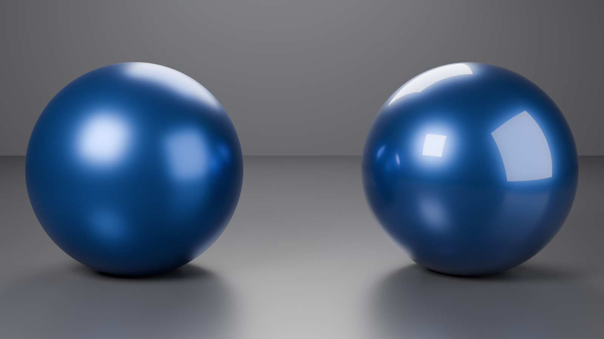
Clearcoat Effect
🚗 Car Paint and Clearcoat
What clearcoat simulates:
- Second reflective layer on top of base paint
- Common in car paint, lacquered wood, coated surfaces
- Creates depth and multi-layer reflection
Using Clearcoat parameter:
- In Principled BSDF: Clearcoat slider (0.0 - 1.0)
- Clearcoat: 0.5-1.0 for car paint
- Clearcoat Roughness: 0.0-0.1 (very smooth layer)
- Base Color: Car paint color
- Metallic: 0.0 or 1.0 depending on paint type
- Roughness: 0.3-0.5 (base paint layer)
Result: Dual-layer reflection like real car paint!
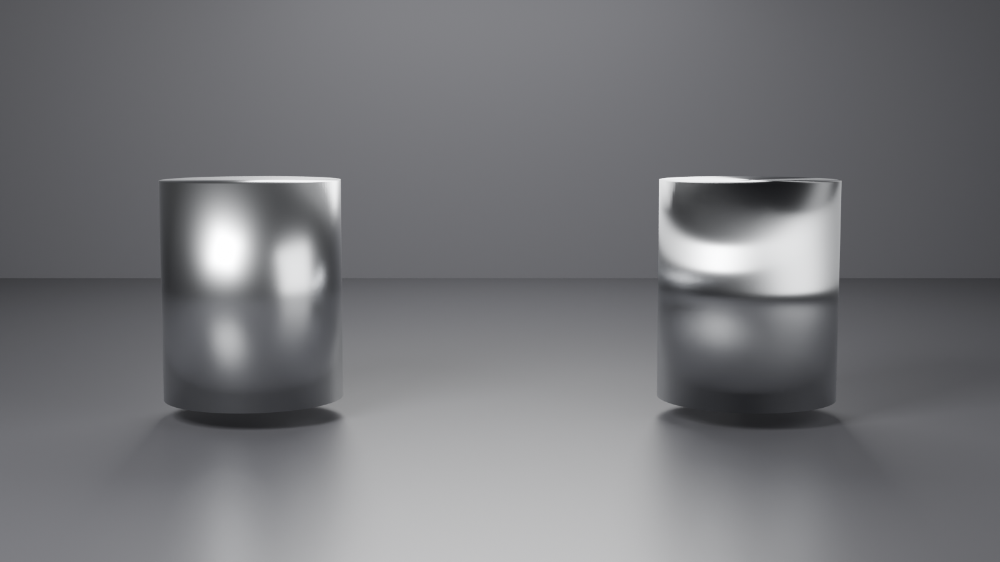
Anisotropic Reflections
↔️ Directional Highlights
What anisotropic does:
- Stretches highlights in one direction
- Simulates brushed metal, hair, fabric threads
- Creates distinctive elongated reflections
Using Anisotropic:
- Anisotropic: 0.3-0.8 (amount of stretching)
- Anisotropic Rotation: 0.0-1.0 (rotation angle)
- 0.0 = horizontal stretch
- 0.25 = vertical stretch
- Can plug in texture for varying rotation!
Best uses:
- Brushed aluminum (Anisotropic: 0.5, one direction)
- Hair and fur (varying rotation)
- Satin fabric (moderate anisotropy)
- CDs/DVDs (circular anisotropic pattern)
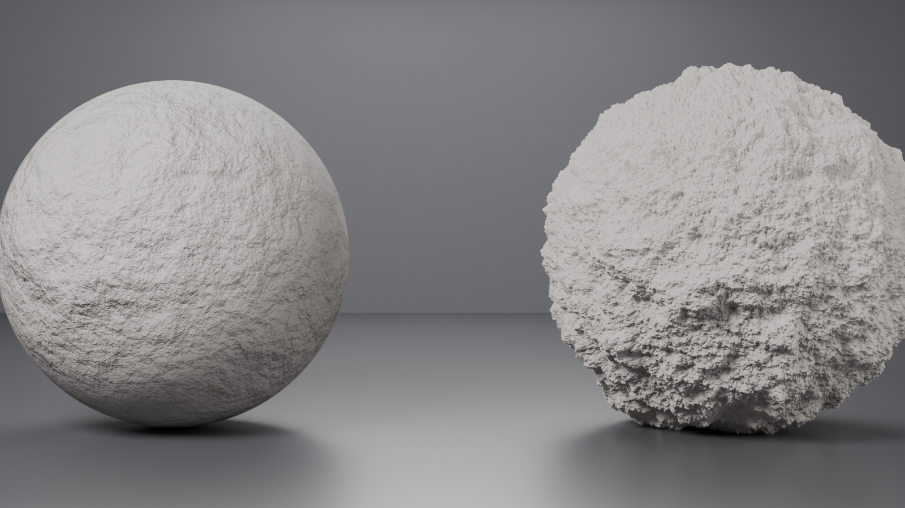
Displacement and Height
⛰️ True 3D Surface Detail
Displacement vs. Bump/Normal:
- Bump/Normal: Fake detail (lighting trick, no geometry change)
- Displacement: Actually moves vertices (true 3D detail)
- Displacement is more realistic but requires subdivided mesh
Setting up displacement:
- Subdivide mesh (Subdivision Surface modifier or manual)
- Add displacement texture (grayscale)
- Set Color Space to Non-Color
- Connect to Material Output Displacement socket
- Material Settings → Displacement: Displacement Only or Displacement and Bump
- Adjust strength (usually 0.1-1.0)
When to use displacement:
- Extreme close-ups where silhouette matters
- Terrain and landscapes
- Highly detailed surfaces (rock, bark, rough materials)
Performance note: Displacement is expensive! Use bump/normal when possible.
⚡ Material Optimization and Performance
As your materials become more complex, performance becomes important. Let's learn how to keep your materials both beautiful and efficient, ensuring smooth viewport performance and reasonable render times.
Understanding Material Performance
🎯 What Slows Down Materials
Performance bottlenecks:
- Excessive node complexity: Too many nodes in a chain
- High-resolution textures: 4K+ textures everywhere
- Multiple Mix Shaders: Each mix adds calculation time
- Transmission/Glass: Ray tracing is expensive
- Subsurface Scattering: Requires multiple light bounces
- Displacement: Most expensive (requires geometry subdivision)
Performance hierarchy (fastest to slowest):
- Simple Principled BSDF with solid colors
- Principled BSDF with textures
- Principled BSDF with procedural textures
- Materials with Mix Shaders (2-3 layers)
- Complex layered materials (4+ Mix Shaders)
- Materials with Subsurface Scattering
- Transparent/Transmission materials
- Materials with Displacement
Optimization Strategies
🔧 Making Materials Faster
Strategy 1: Simplify node trees
- Combine textures: Instead of separate noise textures, use one and split channels
- Remove unnecessary nodes: Delete Math/ColorRamp nodes that barely change output
- Bake complex procedurals: Convert procedural to image texture (see below)
- Use Mix Color instead of Mix Shader when possible: Mixing colors is faster than mixing shaders
Strategy 2: Texture resolution management
- Background objects: 512px - 1K textures (won't be seen in detail)
- Mid-ground objects: 1K - 2K textures
- Hero objects (close-ups): 2K - 4K textures
- Massive surfaces (far away): Can use lower resolution with tiling
Strategy 3: Smart shader choices
- Use bump instead of displacement when possible (fake it!)
- Limit Mix Shader layers to 3-4 maximum for most objects
- Use shader variants: Simplified version for viewport, detailed for final render
- Avoid unnecessary subsurface: Only use when translucency is visible
Strategy 4: Viewport vs. Render settings
- Viewport Display (in material properties):
- Blend Mode: Opaque (fastest) vs. Alpha Blend (slower)
- Backface Culling: ON (skips back faces)
- Simplify complex materials in viewport:
- Reduce texture preview resolution
- Temporarily disable some Mix Shaders
- Use Material Preview mode instead of Rendered
Baking Procedural Materials
🍞 Converting Procedurals to Textures
Why bake?
- Procedural textures recalculate every frame (slow)
- Image textures are pre-calculated (much faster)
- Baking = saving procedural result as image
Basic baking workflow:
- Create UV unwrap: Object needs UV coordinates to bake to
- Select object → Tab (Edit Mode)
- U → Smart UV Project (or other unwrap method)
- Add Image Texture node:
- In Shader Editor: Shift+A → Texture → Image Texture
- Click "New" → Name it (e.g., "Wood_Baked")
- Set resolution (1K, 2K, 4K)
- Important: Don't connect this node yet, just select it
- Set up bake settings:
- Render Properties → Bake section
- Bake Type: "Diffuse" (for color) or "Combined" (for full material)
- Influence: If using Diffuse, uncheck "Direct" and "Indirect", check only "Color"
- Bake!
- Make sure Image Texture node is selected (active)
- Click "Bake" button
- Wait for progress bar
- Save the baked image:
- Image Editor → Image → Save As
- Save as PNG or EXR
- Replace procedural with baked texture:
- Delete or disconnect procedural nodes
- Connect Image Texture → Principled Base Color
- Much faster now!
What to bake vs. keep procedural:
- Bake: Base color patterns, complex color gradients, wood grain, stone patterns
- Keep procedural: Bump/normal maps (they're already efficient), simple roughness variation
Material Organization and Management
📁 Keeping Materials Organized
Naming conventions:
- Descriptive names: "Wood_Oak_Polished" not "Material.001"
- Prefixes for categories:
- MTL_Metal_Chrome
- MTL_Wood_Walnut
- MTL_Plastic_Red_Glossy
- Version numbers: "Glass_Frosted_v02" for iterations
Using Node Groups (advanced organization):
- Select nodes you want to group: Click and drag selection box
- Create group: Ctrl+G (or Cmd+G on Mac)
- Name the group: Double-click "NodeGroup" name to rename
- Edit group: Tab to enter group, Tab again to exit
- Reuse group: Shift+A → Group → [Your Group Name]
Benefits of Node Groups:
- Clean up complex node trees (hide details)
- Reuse common setups (dirt layer, edge wear, etc.)
- Create your own "custom nodes"
- Easier to read and understand material at glance
Using Frame nodes for organization:
- Add Frame: Shift+A → Layout → Frame
- Parent nodes to frame: Select nodes → Ctrl+P with frame selected
- Label frames: "Base Material", "Edge Wear", "Dirt Layer", etc.
- Color-code frames: Different colors for different purposes
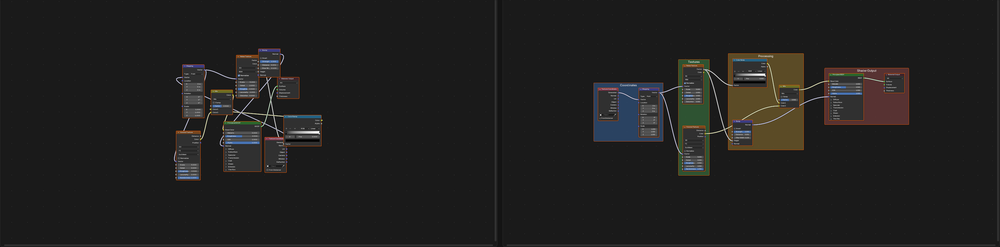
⚠️ Common Material Performance Mistakes
- Using 4K textures on small background objects → Overkill, wastes memory
- 10+ Mix Shaders in one material → Exponentially slower, simplify!
- Displacement on every object → Reserve for hero objects only
- Not baking procedurals for animation → Recalculates every frame!
- Subsurface on opaque materials → No visual benefit, pure performance cost
- Forgetting to set Color Space → Non-Color data as sRGB = wasted processing
🔍 Troubleshooting Common Material Issues
Even experienced artists encounter material problems. Let's solve the most common issues you'll face and learn how to diagnose problems quickly.
Material Not Showing in Viewport
👻 "My Material Disappeared!"
Check these in order:
1. Viewport Shading Mode
- Top right of 3D Viewport: four sphere icons
- Must be in "Material Preview" (3rd sphere) or "Rendered" (4th sphere)
- Solid mode (2nd sphere) shows flat colors only
2. Material Actually Assigned
- Select object → Material Properties
- Check if material is in the slots list
- If slot exists, ensure "Assign" button was clicked in Edit Mode
3. Viewport Display Settings
- Material Properties → Viewport Display section
- Check "Color" isn't overriding material
- Ensure Blend Mode is appropriate
4. Scene Lighting
- Material Preview needs lights to show material
- Add a light: Shift+A → Light → Area Light
- Or check World lighting (background)
5. Material Output Connected
- In Shader Editor, check material connects to "Material Output" node
- Green "Surface" socket must be connected
Material Looks Different in Render
🎭 Viewport vs. Render Discrepancy
Why this happens:
- Viewport uses simplified preview (faster)
- Final render uses full calculations (accurate)
- Different render engines (Eevee viewport vs. Cycles render)
Common causes and fixes:
Issue: Glass/transparency not working in Eevee
- Fix: Material Properties → Settings → Blend Mode: "Alpha Blend" or "Alpha Clip"
- Also enable: Screen Space Reflections in Render Properties
- For refraction: Screen Space Refraction checkbox (in material settings)
Issue: Material too dark in render
- Cause: Insufficient lighting or too low light intensity
- Fix: Increase light strength, add more lights, or check World lighting
Issue: Procedural textures look different
- Cause: Object scale and texture scale mismatch
- Fix: Apply object scale (Ctrl+A → Scale), adjust texture coordinates
Issue: Displacement not showing
- Cycles: Works automatically
- Eevee: Doesn't support true displacement (use bump instead)
Texture Issues
🖼️ Texture Not Displaying Correctly
Problem: Texture is stretched or distorted
- Cause: Bad UV unwrap or missing UVs
- Fix:
- Select object → Tab (Edit Mode) → U → Smart UV Project
- Or manually unwrap properly
- Check UVs in UV Editor to verify layout
Problem: Texture appears washed out or wrong colors
- Cause: Wrong Color Space setting
- Fix:
- Color/diffuse textures: Color Space = "sRGB"
- Roughness/metallic/normal maps: Color Space = "Non-Color"
- Click on Image Texture node → check Colorspace dropdown
Problem: Texture not loading (pink/purple material)
- Cause: Missing texture file or broken path
- Fix:
- Click folder icon in Image Texture node
- Navigate to correct texture file
- Or: File → External Data → Find Missing Files
Problem: Procedural texture not moving with object
- Cause: Using World or Camera coordinates instead of Object
- Fix: Texture Coordinate node → use "Object" or "UV" output
Weird Visual Artifacts
👾 Strange Visual Glitches
Problem: Black splotches or fireflies in render
- Cause (Cycles): Noise from path tracing, insufficient samples
- Fix:
- Increase Render Samples (512, 1024, 2048+)
- Enable Denoising in Render Properties
- Check for extremely bright light sources (reduce strength)
Problem: Mesh visible through transparent material
- Cause: Backface showing through or wrong blend mode
- Fix:
- Material Properties → Settings → Backface Culling: ON
- Or check mesh has correct normals (no flipped faces)
- Edit Mode → Alt+N → Recalculate Normals
Problem: Material looks faceted/blocky instead of smooth
- Cause: Flat shading instead of smooth shading
- Fix:
- Object Mode → Right-click object → Shade Smooth
- Add Edge Split or Smooth modifier if needed
Problem: Z-fighting (flickering surfaces)
- Cause: Two surfaces occupying same space
- Fix:
- Separate surfaces slightly (move apart)
- Or use Transparency/Alpha on one layer
- Check for duplicate/overlapping geometry
✅ Pro Troubleshooting Workflow
When material doesn't work as expected:
- Isolate the problem: Is it viewport only? Render only? Specific angle?
- Test with simple material: Replace with basic Principled BSDF + color
- If simple works → problem is in complex setup
- If simple fails → problem is object/scene/settings
- Build complexity gradually: Add nodes one by one to find culprit
- Check render engine compatibility: Some features Eevee-only or Cycles-only
- View from different angles: Some issues only visible at certain angles
- Test on default cube: If it works on cube, problem is your mesh
🎨 Project: Create a Material Library
Time to put everything together! You'll create a comprehensive material library with various realistic materials, properly organized and optimized. This library will be a resource you can use in all future projects.
🎯 Project Goal
Create a collection of 10-12 professional, reusable materials covering different material types. Each material should be properly named, organized, and demonstrate the techniques you've learned.
Materials to create:
- ✨ Polished metal (chrome or gold)
- 🪨 Rough stone or concrete
- 🪟 Clear glass
- 🌲 Wood (procedural or textured)
- 🎨 Plastic (glossy and matte variants)
- 🧱 Worn/weathered material (rusted metal, aged paint, etc.)
- 🧵 Fabric (velvet, silk, or cotton)
- 💧 Water or liquid
- 💡 Emissive/glowing material
- 🎭 One creative material of your choice!
Step 1: Set Up Your Scene
🎬 Scene Preparation
- Create a new file: Start fresh (File → New → General)
- Delete default cube: X → Delete (we'll add our own)
- Add display objects:
- Shift+A → Mesh → UV Sphere (good for showing reflections)
- Shift+A → Mesh → Cylinder (shows anisotropic effects well)
- Shift+A → Mesh → Suzanne (complex shape for testing)
- Arrange them in a row with space between
- Set up lighting:
- Delete default light
- Shift+A → Light → Area Light
- Position above and to side of objects
- Increase Power to 100-200W
- Or use HDRI: World Properties → Color → Environment Texture → Load HDRI
- Set up camera:
- Numpad 0 (camera view)
- N → View → Camera to View (checkbox)
- Adjust view to see all objects nicely
- N → View → Camera to View (uncheck to lock)
- Choose render engine:
- Render Properties → Render Engine: Cycles (most accurate)
- Or Eevee (faster previews)
Step 2: Create Your Materials
🎨 Material Creation Workflow
For each material:
- Create the material:
- Select an object (assign one material per object)
- Material Properties → New
- Immediately rename: "MTL_[Type]_[Variant]" (e.g., "MTL_Metal_Chrome")
- Build the shader:
- Open Shader Editor
- Use techniques from this lesson
- Reference the "Creating Realistic Materials" section earlier
- Don't overcomplicate—quality over complexity!
- Organize nodes:
- Use Frame nodes to label sections
- Keep node tree clean (align nodes, use reroutes if needed)
- Add comment if needed (Shift+A → Layout → Frame → Label)
- Test and refine:
- Switch between Material Preview and Rendered view
- Adjust parameters until it looks right
- Compare to reference images if available
Step 3: Weathered Material Challenge
🛠️ Advanced: Create a Layered Worn Material
For your worn/weathered material, demonstrate advanced techniques:
- Start with base material: Metal, paint, or plastic
- Add edge wear:
- Use Geometry node Pointiness
- Mix in brighter, smoother shader at edges
- Add dirt layer:
- Procedural noise for dirt mask
- Accumulates in recesses (inverted pointiness)
- Add scratches (optional):
- Linear noise pattern
- Connected to Bump for surface scratches
- Add rust/oxidation (for metal):
- Rough, orange-brown material
- Mixed in at edges and worn areas
- Organize: Use Frame nodes for each layer
Reminder: Don't go beyond 3-4 Mix Shaders—keep it performant!
Step 4: Organize and Save
📚 Library Organization
- Final naming check:
- All materials have descriptive names
- Use consistent naming convention
- Example: MTL_Metal_Gold, MTL_Metal_Chrome, MTL_Wood_Oak
- Add Fake User to all materials:
- In Material Properties, click shield icon next to material name
- This prevents Blender from deleting unused materials on file close
- Important: Do this for EVERY material in your library!
- Clean up scene:
- Arrange objects nicely
- Frame camera view to show all materials
- Adjust lighting for best presentation
- Save your file:
- File → Save As
- Name: "Material_Library.blend" (or similar)
- Save in a known location
- Test render:
- F12 to render
- Check all materials render correctly
- Image → Save As → save render as reference
✅ Project Success Checklist
Your material library is complete when:
- ✅ 10-12 materials created covering different types
- ✅ All materials properly named with consistent convention
- ✅ Fake User enabled on all materials
- ✅ At least one layered/weathered material demonstrating advanced techniques
- ✅ Node trees organized with frames and clean layout
- ✅ Materials look realistic and render correctly
- ✅ File saved and test render completed
- ✅ Scene well-lit to showcase materials effectively
Bonus Challenges
🌟 Take It Further (Optional)
If you want extra practice:
- Create material variations:
- Polished vs. brushed metal
- Glossy vs. matte plastic
- Clean vs. dirty glass
- Experiment with complex materials:
- Car paint with clearcoat
- Subsurface materials (wax, jade, skin)
- Anisotropic materials (brushed aluminum, CDs)
- Create material showcase scene:
- Multiple camera angles
- Professional lighting setup
- Labels for each material
- Bake procedural materials:
- Practice the baking workflow
- Compare procedural vs. baked performance
🎓 Lesson Summary
What You've Learned
Congratulations! You've completed an extensive deep dive into advanced materials. This lesson covered sophisticated techniques that separate beginner work from professional results.
Key concepts mastered:
- Realistic material creation: Glass, metals, wood, plastic, stone, fabric, water, skin, and more
- Advanced shading techniques: Edge wear, dirt accumulation, layered materials, clearcoat, anisotropic reflections
- Displacement: True 3D surface detail vs. bump/normal faking
- Material optimization: Performance strategies, baking procedurals, efficient workflows
- Organization: Naming conventions, node groups, frame nodes, material management
- Troubleshooting: Solving common material problems systematically
Skills you can now do:
- ✨ Create photorealistic materials for any surface type
- 🎨 Layer multiple materials realistically (wear, dirt, rust)
- ⚡ Optimize materials for performance without sacrificing quality
- 🔧 Troubleshoot and fix material issues quickly
- 📚 Organize complex material libraries professionally
- 🎯 Choose the right technique for each situation
The Material Mindset
"Materials tell the story of an object."
Every scratch, every bit of wear, every shine and reflection tells us about an object's history and purpose. A perfectly clean chrome sphere feels sterile and fake. But add subtle fingerprints, dust in the crevices, and worn edges—suddenly it feels like something that exists in the real world.
As you create materials, always ask: "What is this object's story?" A brand-new smartphone has different wear patterns than a 20-year-old doorknob. A luxury sports car's paint differs from a rusty farm truck. The materials should reflect the object's context and history.
💡 Pro Tips for Continued Learning
- Study real-world materials: Take photos, observe lighting, notice subtle details in everyday objects
- Use reference images: Google "PBR material reference" for scientifically accurate values
- Build a material library habit: Every time you create a good material, save it to your library
- Experiment constantly: The best way to learn is to try things and see what happens
- Start simple, add complexity: Build materials gradually—it's easier to add than to debug complexity
- Join the community: Blender Artists, Reddit r/blender, Discord servers—share materials and get feedback
What's Next?
With advanced material knowledge under your belt, you're ready to tackle the rendering half of the visualization equation!
Coming up in Module 4:
- Lesson 15: Understanding Light Types—area lights, point lights, sun, spotlights
- Lesson 16: Three-Point Lighting Setup—professional lighting techniques
- Lesson 17: HDRI and World Lighting—realistic environment lighting
- Lesson 18: Eevee Real-time Rendering—fast, interactive rendering
- Lesson 19: Cycles Path Tracing—photorealistic rendering
Great materials need great lighting to truly shine. In the next module, you'll learn how to light your scenes like a professional cinematographer, bringing your materials to life with beautiful, dramatic lighting.
🎉 Excellent Work!
You've mastered one of Blender's most powerful and complex systems. Materials are the visual language of 3D art—and you're now fluent!
The material library you created isn't just a project—it's a tool you'll use throughout your Blender journey. Every material you make from now on becomes part of your personal asset library, making each subsequent project faster and more professional.
Remember: Great materials aren't about complexity—they're about observation, understanding, and subtle detail. Keep studying the real world, and your digital materials will feel increasingly real.
Ready to light up your scenes? Let's move on to lighting! 💡